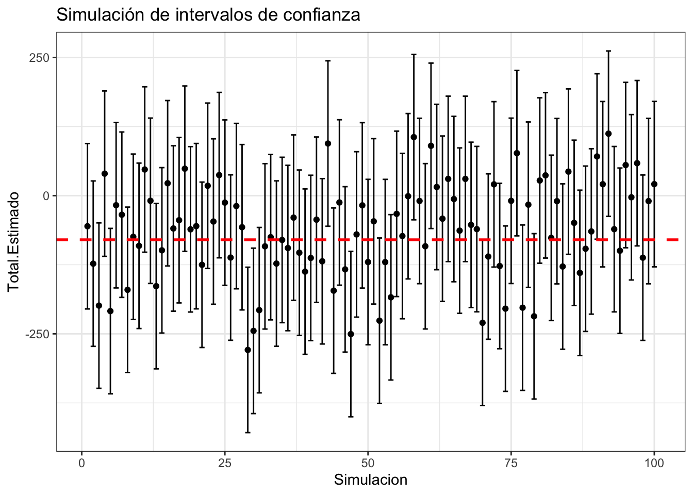

Capítulo 4 Muestreo Aleatorio Simple
4.1 Inicio
Siempre que inicies un nuevo trabajo en R ¡no olvides borrar el historial!
rm(list = ls()) #Clear all4.2 Librerías
Para este análisis vamos a tener que llamar a las siguientes librerías previamente instaladas (por única vez) con install.packages:
library(tidyverse)
library(dplyr)
library(imager)
library(rlist)
library(gridExtra)
library(kableExtra)4.3 Notación
Supongamos una matriz de datos de tamaño \(N \times L\) dada por: \[ U = \begin{pmatrix} z_1 \Big| z_2 \Big| \dots \Big| z_{\ell} \end{pmatrix} \]
donde las \(z_i\) representan las columnas de la matriz. La \(U\) será conocida como la matriz universo (el universo ó la población) si contiene toda la información de la población. Intuitivamente, la matriz \(U\) son todos los datos de un censo: esta es una matriz ideal donde están todos los datos.
A cualquier permutación en las filas de una submatriz \(S\) (tamaño \(n \times \ell\) con \(0 < n \leq N\) y \(0 < \ell \leq L\)) de \(U\) se le conoce como una muestra de \(U\). Si \(S\) es una variable aleatoria (por ejemplo, porque se construyó a partir de un mecanismo de aleatoreidad) decimos que \(S\) es una muestra aleatoria (denotamos \(\mathcal{S}\) a la variable aleatoria y \(S\) a un valor específico de la misma).2
En particular en esta sección (y hasta establecer lo contrario) consideraremos que el universo \(U\) es de tamaño \(N \times 1\) y la submatriz \(S\) (resp. \(\mathcal{S}\)) es de tamaño \(n \times 1\). En notación \(U = (x_1, x_2, \dots, x_N)^T\) y técnicamente \(S = (x_{i_1}, x_{i_2}, \dots, x_{i_n})^T\) para un conjunto de índices \(i_1, i_2, \dots, i_n\). Sin embargo para simplificar la notación consideraremos que en \(S\) están los primeros \(n\) de los \(x_i\); es decir: \[ S = (x_1, x_2, \dots, x_n)^T \]
Cuando estemos hablando de la muestra como variable aleatoria \(\mathcal{S}\) y no como valores observados (fijos) \(S\), denotaremos: \[ \mathcal{S} = (X_1, X_2, \dots, X_n)^T \] donde \(\mathcal{S}\) representa la muestra posible y cada \(X_i\) es una variable aleatoria con el valor posible de la i-ésima entrada.
Un esquema muestral es una función \(\mathbb{P}\) de probabilidad definida en el conjunto de submatrices de \(U\). Ésta es el punto medular de todas las estrategias de muestreo: distintos esquemas muestrales generan diferentes distribuciones y pueden llevar a distintas inferencias sobre un fenómeno.
4.3.1 Ejemplo
Considera la matriz universo con tres letras: \[ U = \begin{pmatrix} \text{A} \\ \text{B} \\ \text{C} \end{pmatrix} \] Ésta es la matriz universo. Las submatrices3 que pueden crearse a partir de dicho universo son:
De dimensión \(n = 1\): \(S^1 = (\text{A})^T\), \(S^2 = (\text{B})^T\), \(S^3 = (\text{C})^T\).
De dimensión \(n = 2\): \(S^4 = (\text{A}, \text{B})^T\), \(S^5 = (\text{A}, \text{C})^T\), \(S^6 = (\text{B}, \text{C})^T\), \(S^7 = (\text{B}, \text{A})^T\), \(S^8 = (\text{C}, \text{A})^T\), \(S^9 = (\text{C}, \text{B})^T\).
De dimensión \(n = 3\): \(S^{10} = (\text{A}, \text{B}, \text{C})^T\), \(S^{11} = (\text{B}, \text{A}, \text{C})^T\), \(S^{12} = (\text{A}, \text{C}, \text{B})^T\), \(S^{13} = (\text{C}, \text{B}, \text{A})^T\), \(S^{14} = (\text{B}, \text{C}, \text{A})^T\), \(S^{15} = (\text{C}, \text{A}, \text{B})^T\),
Un esquema muestral sería la función de probabilidad: \[ \mathbb{P}(\mathcal{S} = S^k) = \begin{cases} 0.1 & \text{ si } k = 1, \\ 0.2 & \text{ si } k = 3, \\ 0.5 & \text{ si } k = 11, \\ 0.2 & \text{ si } k = 15, \\ 0 & \text{ en otro caso.} \end{cases} \]
Otro esquema muestral posible sería: \[ \mathbb{P}(\mathcal{S} = S^k) = \begin{cases} \frac{1}{3} & \text{ si } k = 1, \\ \frac{1}{3} & \text{ si } k = 2, \\ \frac{1}{3} & \text{ si } k = 3, \\ 0 & \text{ en otro caso.} \end{cases} \] Este último esquema, intuitivamente, corresponde a la selección aleatoria de un elemento de \(U\) con una probabilidad uniforme de que cada elemento salga.
A fin de simplificar el problema (y hasta que se diga lo contrario) agregaremos la hipótesis de intercambiabilidad; es decir, consideraremos es irrelevante el orden de las filas de las submatrices de datos. Por ejemplo, bajo intercambiabilidad, \(S^4 = (\text{A}, \text{B})^T\) es la misma matriz que \(S^7 = (\text{B}, \text{A})^T\).
Un ejemplo de muestra donde el orden sí importa (i.e. no son intercambiables) es cuando se realizan exámenes orales según una selección aleatoria de la lista. La tercera persona en presentar el examen estará informada por el ¿qué te preguntó el profe?, ¿estuvo difícil? que las primeras dos le cuenten.
Bajo intercambiabilidad, los esquemas muestrales estarán definidos únicamente sobre los siguientes vectores:
De dimensión \(n = 1\): \(S^1 = (\text{A})^T\), \(S^2 = (\text{B})^T\), \(S^3 = (\text{C})^T\).
De dimensión \(n = 2\): \(S^4 = (\text{A}, \text{B})^T\), \(S^5 = (\text{A}, \text{C})^T\), \(S^6 = (\text{B}, \text{C})^T\).
De dimensión \(n = 3\): \(S^{7} = (\text{A}, \text{B}, \text{C})^T\).
En este caso un esquema muestral sería: \[ \mathbb{P}(\mathcal{S} = S^k) = \begin{cases} \frac{1}{16} & \text{ si } k = 1, \\ \frac{3}{16} & \text{ si } k = 2, \\ 0 & \text{ si } k = 3, \\ \frac{7}{16} & \text{ si } k = 4, \\ \frac{1}{16} & \text{ si } k = 5, \\ \frac{4}{16} & \text{ si } k = 6, \\ 0 & \text{ en otro caso.} \end{cases} \] Dado un elemento \(x_i\) del universo, podemos preguntarnos por la probabilidad de que dicho \(x_i\) esté en la muestra. Siguiendo el ejemplo anterior: \[ \mathbb{P}(\text{A} \in \mathcal{S}) = \mathbb{P}(\mathcal{S} = S^1) + \mathbb{P}(\mathcal{S} = S^4) + \mathbb{P}(\mathcal{S} = S^5) + \mathbb{P}(\mathcal{S} = S^7) = \frac{9}{16}. \]
Como notación, para una población \(U = (x_1, x_2, \dots, x_N)^T\) y una muestra aleatoria \(\mathcal{S}\) denotamos la probabilidad de que \(x_k\) esté en la muestra como: \[ \pi_k = \mathbb{P}(x_k \in \mathcal{S}) \] Estas probabilidades (para \(k = 1,2,\dots, N\)) se conocen como probabilidades de inclusión de primer orden. La probabilidad conjunta de que \(x_k\) y \(x_l\) (ambos) estén en la muestra (probabilidad de inclusión de segundo orden) está dada por: \[ \pi_{k,l} = \mathbb{P}(x_k \in \mathcal{S}, x_l \in \mathcal{S}) \] Notamos que por definición \(\pi_{kk} = \pi_k\). Análogamente se pueden crear probabilidades de inclusión de cualquier orden deseado.
Finalmente, una población \(U = (x_1, x_2, \dots, x_N)^T\) y una muestra aleatoria \(\mathcal{S}\) definimos la variable indicadora de que \(x_k\) esté en la muestra como: \[ \mathbb{I}_{\mathcal{S}}(x_k) = \begin{cases} 1 & \text{ si } x_k \in \mathcal{S} \\ 0 & \text{ si } x_k \not\in \mathcal{S} \\ \end{cases} \] Notamos que para una muestra aleatoria \(\mathcal{S}\) las indicadoras tienen una distribución conocida: \[ \mathbb{I}_{\mathcal{S}}(x_k) \sim \text{Bernoulli}(\pi_k) \] pues \[ \mathbb{P}\big( \mathbb{I}_{\mathcal{S}}(x_k) = 1\big) = \mathbb{P}\big(x_k \in \mathcal{S}) = \pi_k \] Como las \(\mathbb{I}_{\mathcal{S}}(x_k)\) son Bernoulli podemos calcular su varianza: \[ \text{Var}\Big( \mathbb{I}_{\mathcal{S}}(x_k)\Big) = \pi_k (1 - \pi_k) \] Finalmente, recordamos que la covarianza entre dos variables aleatorias \(X\), \(Y\) se define como: \[ \text{Cov}(X,Y) = \mathbb{E}[XY] - \mathbb{E}[X]\cdot\mathbb{E}[Y] \] Por lo que calculamos la covarianza entre dos indicadoras (de \(x_k\) y \(x_l\)): \[\begin{equation} \begin{aligned} \text{Cov}\Big(\mathbb{I}_{\mathcal{S}}(x_k), \mathbb{I}_{\mathcal{S}}(x_l) \Big) & = \mathbb{E}\Big[\mathbb{I}_{\mathcal{S}}(x_k) \cdot \mathbb{I}_{\mathcal{S}}(x_l)\Big] - \mathbb{E}\Big[\mathbb{I}_{\mathcal{S}}(x_k)\Big] \mathbb{E}\Big[\mathbb{I}_{\mathcal{S}}(x_l)\Big] \\ & = 1 \cdot \mathbb{P}\Big( \mathbb{I}_{\mathcal{S}}(x_k) \cdot \mathbb{I}_{\mathcal{S}}(x_l) = 1) + 0 \cdot \mathbb{P}\Big( \mathbb{I}_{\mathcal{S}}(x_k) \cdot \mathbb{I}_{\mathcal{S}}(x_l) = 0) - \pi_k \pi_l \\ & = \mathbb{P}\Big( \mathbb{I}_{\mathcal{S}}(x_k) = 1, \mathbb{I}_{\mathcal{S}}(x_l) = 1) - \pi_k \pi_l \\ & = \pi_{k,l} -\pi_k \pi_l \end{aligned} \end{equation}\] La cantidad \(\pi_{k,l} -\pi_k \pi_l\) usualmente se denota \(\Delta_{k,l}\): \[ \Delta_{k,l} = \pi_{k,l} -\pi_k \pi_l \]
A continuación hablaremos de algunos esquemas de muestreo comunmente utilizados y, finalmente, llegaremos a una generalización de los mismos.
4.3.2 Ejercicio
Demuestra las siguientes propiedades de los \(\pi_k\) para un diseño muestral \(\mathbb{P}\) con tamaño fijo de la muestra \(n\in\mathbb{N}\):
\(\sum\limits_{k=1}^N \pi_k = n\)
\(\sum\limits_{\substack{k=1 \\\\ k \neq l}}^N \sum\limits_{l=1}^N \pi_{k,l} = n(n-1)\)
\(\sum\limits_{\substack{l=1 \\\\ l \neq k}}^N \pi_{k,l} = (n-1) \pi_k\)
4.4 Muestreo Aleatorio Simple sin Reemplazo (MAS/sR)
Vamos a considerar una de las formas más sencillas de muestreo: el aleatorio simple sin reemplazo . Para ello seleccionamos de \(U = (x_1, x_2, \dots, x_N)^T\) a \(n\in\mathbb{N}\) (fijo) observaciones asignándole la probabilidad de ser seleccionada a cada una de \(\frac{1}{N}\). Una vez se selecciona la primera, se selecciona una de las que restan de \(U\) con probabilidad \(\frac{1}{N-1}\). El proceso se repite hasta extraer \(n\) elementos.
Comencemos por un ejemplo, supongamos tenemos una población de cinco personas: \[ U = \Big( \text{Ana}, \text{Beto}, \text{Carlos}, \text{Diana}, \text{Enriqueta}\Big)^T \] Si queremos tomar una muestra de \(3\) personas sin reemplazo, las muestras posibles son:
\(\Big( \text{Ana}, \text{Beto}, \text{Carlos}\Big)^T\)
\(\Big( \text{Ana}, \text{Carlos}, \text{Diana}\Big)^T\)
\(\Big( \text{Ana}, \text{Beto}, \text{Diana}\Big)^T\)
\(\Big( \text{Ana}, \text{Beto}, \text{Enriqueta}\Big)^T\)
\(\Big( \text{Ana}, \text{Carlos}, \text{Enriqueta}\Big)^T\)
\(\Big( \text{Ana}, \text{Diana}, \text{Enriqueta}\Big)^T\)
\(\Big( \text{Beto}, \text{Carlos}, \text{Diana}\Big)^T\)
\(\Big( \text{Beto}, \text{Diana}, \text{Enriqueta}\Big)^T\)
\(\Big( \text{Beto}, \text{Carlos}, \text{Enriqueta}\Big)^T\)
\(\Big( \text{Carlos}, \text{Diana}, \text{Enriqueta}\Big)^T\)
Obtener una muestra aleatoria se puede hacer en R con un vector mediante sample:
#Vector de nombres
nombres <- c("Ana","Beto","Carlos","Diana","Enriqueta")
#Muestra
sample(nombres, 3, replace = FALSE)## [1] "Beto" "Ana" "Diana"Formalmente, un esquema de muestreo es aleatorio simple sin reemplazo si dada una constante \(n \in \mathbb{N}\) (con \(0 < n \leq N\)) se tiene:
\[ \mathbb{P}\big( \mathcal{S} = S \big) = \begin{cases} \frac{1}{\binom{N}{n}} & \text{ si } \#S = n \\ 0 & \text{ en otro caso.} \end{cases} \] En el caso de muestreo aleatorio simple sin reemplazo podemos calcular las probabilidades de inclusión como siguen: \[ \pi_k = \mathbb{P}(x_k \in \mathcal{S}) = \sum\limits_{i=1}^{M_1} \frac{1}{\binom{N}{n}} = \frac{\binom{N-1}{n-1}}{\binom{N}{n}} = \frac{n}{N} = f \] donde la tercera igualdad se sigue de que hay \(M_1 = \binom{N-1}{n-1}\) muestras que contienen al \(x_k\). (La lógica es, fijo el \(x_k\) y entonces me quedan \(N-1\) valores de \(x\) a acomodar en \(n-1\) espacios). Por otro lado: \[ \pi_{k,j} = \mathbb{P}(x_k \in \mathcal{S}, x_j \in S) = \sum\limits_{i=1}^{M_2} \frac{1}{\binom{N}{n}} = \frac{\binom{N-2}{n-2}}{\binom{N}{n}} = \dfrac{n(n-1)}{N(N-1)} \] pues hay \(M_2 = \binom{N-2}{n-2}\) muestras conteniendo a \(x_k\) y \(x_j\) a la vez.
Para estimar el total poblacional dado por: \[ t = \sum\limits_{i=1}^N x_i \] bajo MAS/sR podemos tomar: \[ \hat{t} = N \cdot \bar{x}_{\mathcal{S}} = N \frac{1}{n} \sum\limits_{k = 1}^n x_k= \sum\limits_{k = 1}^n \dfrac{x_k}{n/N} = \sum\limits_{k=1}^N \frac{x_k}{\pi_k} \cdot \mathbb{I}_{\mathcal{S}}(x_k) \] Notamos entonces que el estimador \(\hat{t}\) es una variable aleatoria pues depende de las indicadoras de la muestra. En particular: \[ \mathbb{E}\big[ \hat{t} \big] = \mathbb{E}\bigg[\sum\limits_{k=1}^N \frac{x_k}{\pi_k} \cdot \mathbb{I}_{\mathcal{S}}(x_k) \bigg] = \sum\limits_{k=1}^N \frac{x_k}{\pi_k} \underbrace{\mathbb{E}\bigg[\mathbb{I}_{\mathcal{S}}(x_k) \bigg]}_{\pi_k} = t \] de donde se sigue que en promedio el estimador \(\hat{t}\) vale el total.
Definición: [Insesgado] Un estimador \(\hat{\theta}\) es un estimador insesgado de \(\theta\) si: \[ \mathbb{E}\big[ \hat{\theta} - \theta] = 0 \] En nuestro caso \(\hat{t}\) es insesgado. En general, la cantidad \(\mathbb{E}\big[ \hat{\theta} - \theta]\) se conoce como el sesgo .
De manera numérica, podemos simular la estimación del total en 1000 simulaciones como sigue:
nsim <- 1000
N <- 1000
n <- 100
base.completa <- data.frame(x = rnorm(N))
total <- sum(base.completa$x)
total.muestra <- rep(NA, nsim)
for (i in 1:nsim){
muestra <- sample(base.completa$x, n)
total.muestra[i] <- N*mean(muestra)
}
mean(total.muestra)## [1] -78.75412Podemos ver las simulaciones como sigue:
ggplot() +
geom_histogram(aes(x = total.muestra, y = ..density..), fill = "#008B8B",
color = "white", binwidth = 40) +
geom_vline(aes(xintercept = total), linetype = "dashed") +
theme_classic() 
Como podrás notar la \(\hat{t}\) es una variable aleatoria y por tanto tiene varianza. De hecho: \[ \textrm{Var}(\hat{t}) = \sum\limits_{k = 1}^N \sum\limits_{l = 1}^N \Delta_{k,l} \frac{x_k}{\pi_k} \frac{x_l}{\pi_l} \] Para demostrarlo seguimos las igualdades: \[\begin{equation}\nonumber \begin{aligned} \textrm{Var}(\hat{t}) & = \textrm{Var}\Bigg( \sum\limits_{k=1}^N \frac{x_k}{\pi_k} \cdot \mathbb{I}_{\mathcal{S}}(x_k) \Bigg) \\ & = \sum\limits_{k=1}^N \frac{x_k^2}{\pi_k^2} \cdot \textrm{Var}\Big(\mathbb{I}_{\mathcal{S}}(x_k) \Big) + \sum\limits_{k = 1}^N \sum\limits_{\substack{l = 1 \\ \\ l \neq k}}^{N} \frac{x_k}{\pi_k} \frac{x_l}{\pi_l} \cdot \textrm{Cov}\Big(\mathbb{I}_{\mathcal{S}}(x_k), \mathbb{I}_{\mathcal{S}}(x_l) \Big) \\ & = \sum\limits_{k=1}^N \frac{x_k^2}{\pi_k^2} \cdot \underbrace{\pi_k (1 - \pi_k)}_{\Delta_{k,k}} + \sum\limits_{k = 1}^N \sum\limits_{\substack{l = 1 \\ \\ l \neq k}}^{N} \frac{x_k}{\pi_k} \frac{x_l}{\pi_l} \cdot \underbrace{\textrm{Cov}\Big(\mathbb{I}_{\mathcal{S}}(x_k), \mathbb{I}_{\mathcal{S}}(x_l) \Big)}_{\Delta_{k,l}} \\ & = \sum\limits_{k = 1}^N \sum\limits_{\substack{l = 1 \\ \\ l \neq k}}^{N}\Delta_{k,l} \frac{x_k}{\pi_k} \frac{x_l}{\pi_l} \end{aligned} \end{equation}\]
Numéricamente, en el ejemplo anterior la varianza (simulada) de \(\hat{t}\) es:
var(total.muestra)## [1] 8515.982mientras que la real está dada por (ver ejercicio más adelante):
f <- n/N
varianza <- N^2*(1 - f)/n*var(base.completa$x)
print(varianza)## [1] 8278.693Nota que tenemos un problema: para estimar \(\textrm{Var}(\hat{t})\) necesitamos conocer todas las \(x_k\) de la población ¡lo cual es imposible! Entonces necesitamos un estimador de la varianza de \(\hat{t}\) para lo cual proponemos:
\[ \widehat{\textrm{Var}}(\hat{t}) = \sum\limits_{k = 1}^n \sum\limits_{l = 1}^n \dfrac{\Delta_{k,l}}{\pi_{k,l}} \frac{x_k}{\pi_k} \frac{x_l}{\pi_l} \]
Para demostrar que el estimador es insesgado tomamos el valor esperado y agregamos las variables indicadoras correspondientes:
\[ \widehat{\textrm{Var}}(\hat{t}) = \sum\limits_{k = 1}^N \sum\limits_{l = 1}^N \dfrac{\Delta_{k,l}}{\pi_{k,l}} \frac{x_k}{\pi_k} \frac{x_l}{\pi_l} \mathbb{I}_{\mathcal{S}}(x_k) \mathbb{I}_{\mathcal{S}}(x_l) \] Se sigue la demostración:
\[\begin{equation}\nonumber \begin{aligned} \mathbb{E}\Big[\widehat{\textrm{Var}}(\hat{t}) \Big] & = \mathbb{E}\bigg[ \sum\limits_{k = 1}^N \sum\limits_{l = 1}^N \dfrac{\Delta_{k,l}}{\pi_{k,l}} \frac{x_k}{\pi_k} \frac{x_l}{\pi_l} \mathbb{I}_{\mathcal{S}}(x_k) \mathbb{I}_{\mathcal{S}}(x_l) \bigg] \\ & = \sum\limits_{k = 1}^N \sum\limits_{l = 1}^N \dfrac{\Delta_{k,l}}{\pi_{k,l}} \frac{x_k}{\pi_k} \frac{x_l}{\pi_l} \underbrace{\mathbb{E}\bigg[ \mathbb{I}_{\mathcal{S}}(x_k) \mathbb{I}_{\mathcal{S}}(x_l) \bigg]}_{*} \\ \end{aligned} \end{equation}\] donde notamos que:
\[\begin{equation}\nonumber \begin{aligned} * = \mathbb{E}\bigg[ \mathbb{I}_{\mathcal{S}}(x_k) \mathbb{I}_{\mathcal{S}}(x_l) \bigg] & = \textrm{Cov}\Big( \mathbb{I}_{\mathcal{S}}(x_k), \mathbb{I}_{\mathcal{S}}(x_l) \Big) + \mathbb{E}\Big[ \mathbb{I}_{\mathcal{S}}(x_k)\Big] \mathbb{E}\Big[ \mathbb{I}_{\mathcal{S}}(x_l)\Big] \\ & = \pi_{k,l} - \pi_k \pi_l + \pi_k\pi_l \\ & = \pi_{k,l} \end{aligned} \end{equation}\]
de donde se sigue:
\[\begin{equation}\nonumber \begin{aligned} \mathbb{E}\Big[\widehat{\textrm{Var}}(\hat{t}) \Big] & = \sum\limits_{k = 1}^N \sum\limits_{l = 1}^N \dfrac{\Delta_{k,l}}{\pi_{k,l}} \frac{x_k}{\pi_k} \frac{x_l}{\pi_l}\underbrace{ \pi_{k,l}}_{*} \\ & = \sum\limits_{k = 1}^N \sum\limits_{l = 1}^N \Delta_{k,l} \frac{x_k}{\pi_k} \frac{x_l}{\pi_l} = \textrm{Var}(\hat{t}) \end{aligned} \end{equation}\]
Podemos calcular la varianza estimada para una muestra aleatoria simple sin reemplazo como sigue (ver ejercicio):
f <- n/N
varianza <- N^2*(1 - f)/n*var(muestra)
print(varianza)## [1] 7811.204Observaciones
La media muestral \(\bar{x}_{\mathcal{S}} = \frac{1}{n}\sum\limits_{i = 1}^{n} x_i\) es un estimador insesgado de la media poblacional \(\bar{x}_{\mathcal{U}} = \frac{1}{N}\sum\limits_{i = 1}^{N} x_i\). Se sigue de una factorización de \(n\) del total (\(t\) y \(\hat{t}\) respectivamente).
Se puede obtener \(\textrm{Var}(\bar{x}_{\mathcal{S}})\) y \(\widehat{\textrm{Var}}(\bar{x}_{\mathcal{S}})\) factorizando las \(n\) de manera cuadrática del \(\hat{t}\).
4.4.1 Ejercicio
Definimos: \[ s_{x,\mathcal{U}}^2 = \dfrac{1}{N-1} \sum\limits_{k = 1}^N \big( x_k - \bar{x}_{\mathcal{U}})^2 \] como la varianza poblacional ajustada y \[ s_{x,\mathcal{S}}^2 = \dfrac{1}{n-1} \sum\limits_{k = 1}^n \big( x_k - \bar{x}_{\mathcal{S}})^2 \] como la varianza muestral ajustada. Sea \(f = \frac{n}{N}\) la fracción muestral. Demuestra que en el caso de muestreo aleatorio simple sin reemplazo: \[ \textrm{Var}(\hat{t}) = N^2\dfrac{1-f}{n} s^2_{x,\mathcal{U}} \] mientras que el estimador insesgado se transforma en: \[ \widehat{\textrm{Var}}(\hat{t}) = N^2\dfrac{1-f}{n} s^2_{x,\mathcal{S}} \]
4.5 Teorema del Límite Central (Aplicación)
En esta sección hablaremos del teorema central del límite correspondiente a muestreo aleatorio simple con poblaciones finitas. Éste no es el mismo que el de Proba 2 (en términos de hipótesis) aunque las conclusiones sean las mismas. El teorema de Proba 2 establece que si se tiene una colección \(\{ X_i \}\) de variables aleatorias independientes idénticamente distribuidas (todas con distribución acumulada \(F_X\)) con media \(\mu\) y varianza \(\sigma^2 < \infty\), entonces, si definimos \(Z\) como:
\[ Z =\lim_{n \to \infty} \sqrt{\dfrac{n}{\sigma^2}} \cdot \Big( \frac{1}{n}\sum_{i = 1}^n X_i - \mu\Big) \] se tiene que \(Z \sim \textrm{Normal}(0,1)\).
En este teorema central podemos observar que hay algo muy parecido a la media muestral embebido en el teorema (la \(\frac{1}{n}\sum_{i = 1}^n X_i\)) pero no es exactamente la media muestral (aquí se supone que todas las \(X_i\) son independientes con distribución \(F_X\) y en el caso de muestreo aleatorio sin reemplazo se sabe que las indicadoras NO son independientes y que de hecho tampoco son idénticamente distribuidas cuando analizamos \(\sum_{i = 1}^{n} x_i \mathbb{I}_{\mathcal{S}}(x_i)\)). Entonces técnicamente no podemos aplicar el teorema central del límite así como está a nuestra muestra. Sin embargo, Hàjek (y más tarde Rosen ) encontraron condiciones sin tener que pedir independencia ni distribución idéntica que permiten sustituir las \(X_i\) por las de la media muestral (\(x_i \mathbb{I}_{\mathcal{S}}(x_i)\)) y que, cuando \(N\) y \(n\) tienden a infinito “de buena manera,” se tiene algo similar a esta expresión (OJO no es una expresión correcta pero es la idea):
\[
Z =\lim_{N, n \to \infty} \sqrt{\frac{1}{\textrm{Var}(\bar{x}_{\mathcal{S}})}} \cdot \Big( \frac{1}{n}\sum_{i = 1}^N x_i \mathbb{I}_{\mathcal{S}}(x_i) - \bar{x}_{\mathcal{U}}\Big)
\]
donde \(\mu = \sum_{k = 1}^N x_k\) es la media poblacional y \(\sigma^2 = \frac{1}{N} \sum_{k = 1}^N (x_k - \mu)^2\) la varianza poblacional no ajustada. La demostración propia de este teorema la posponemos para una sección posterior. Por ahora, ejemplificaremos el teorema del límite central en R, utilizaremos la expresión anterior para deducir y explicar el concepto de intervalo de confianza y, finalmente, haremos un ejemplo de estimación de intervalo.
4.5.1 Estimación de intervalos de confianza para el total
Un intervalo de confianza de \((1 - \alpha)\times 100 \%\) de un estimador poblacional desconocido \(\theta = \theta(x_1, x_2, \dots, x_N)\) (constante) es un intervalo aleatorio de la forma \(\big[ L(\mathcal{S}), U(\mathcal{S}) \big]\) (donde \(L, U\) son variables aleatorias que dependen de la muestra) tal que \[ \mathbb{P}\Big( \theta \in \big[ L(\mathcal{S}), U(\mathcal{S}) \big]\Big) = 1 - \alpha \] Notamos que lo aleatorio del intervalo son las cotas del mismo y que, dadas distintas muestras \(\mathcal{S}\) el valor de interés \(\theta\) no siempre va a caer ahí. La idea de un intervalo es poder dar una cota de más o menos dónde anda un valor. Veamos un ejemplo con el total.
Recordamos que el estimador del total es insesgado \(\mathbb{E}\big[ \hat{t} \big] = t\) y que por definición: \[ \hat{t} = N \frac{1}{n}\sum\limits_{i = 1}^N x_i \cdot \mathbb{I}_{\mathcal{S}}(x_i) \]
luego usando la versión de muestreo finito del teorema central del límite (factorizando \(N\)) tenemos que:
\[ \sqrt{\frac{1}{\textrm{Var}(\bar{x}_{\mathcal{S}})}} \cdot \Big( \frac{1}{n}\sum_{i = 1}^N x_i \mathbb{I}_{\mathcal{S}}(x_i) - \bar{x}_{\mathcal{U}}\Big) = \cdot N\dfrac{\Big( \frac{1}{n}\sum_{i = 1}^N x_i \mathbb{I}_{\mathcal{S}}(x_i) - \bar{x}_{\mathcal{U}}\Big)}{N\sqrt{\textrm{Var}(\bar{x}_{\mathcal{S}})}} = \dfrac{\hat{t} - t}{\sqrt{\textrm{Var}(\hat{t})}} \mathrel{\dot\sim} \textrm{Normal}(0,1) \] De donde se sigue que si se desea tener un intervalo de tamali \((1 - \alpha) \times 100 \%\) lo que hay que hacer es buscar \(L(\mathcal{S})\) y \(U(\mathcal{S})\) tales que:
\[ \mathbb{P}\Bigg( L(\mathcal{S}) \leq \dfrac{\hat{t} - t}{\sqrt{\textrm{Var}(\hat{t})}} \leq U(\mathcal{S}) \Bigg) = 1 - \alpha \] En este caso las probabilidades (por aproximación asintótica) se modelan bajo la hipótesis de normalidad. Y tomamos ventaja de que la normal es simétrica respecto a la media para proponer que \(L(\mathcal{S}) = -U(\mathcal{S})\) y ambas correspondan a \(\pm \Phi^{-1}(\alpha/2)\) (la función de distirbución acumulada inversa de la normal). Es decir, ambos deben corresponder a los cuantiles con probabilidad \(\alpha/2\) y \(1 - \alpha/2\), denotados \(z_{\alpha/2}\) y \(z_{1 - \alpha/2}\). Por simetría de la normal tenemos que: \(z_{\alpha/2} = - z_{1 - \alpha/2}\) y por tanto: \[ \mathbb{P}\Bigg( z_{\alpha/2} \leq \dfrac{\hat{t} - t}{\sqrt{\textrm{Var}(\hat{t})}} \leq z_{1 -\alpha/2} \Bigg) = 1 - \alpha \] de donde despejamos: \[ \mathbb{P}\Bigg( z_{\alpha/2}\sqrt{\textrm{Var}(\hat{t})} \leq \hat{t} - t \leq z_{1- \alpha/2}\sqrt{\textrm{Var}(\hat{t})} \Bigg) = \mathbb{P}\Bigg( \hat{t} - z_{1-\alpha/2}\sqrt{\textrm{Var}(\hat{t})} \leq t \leq \hat{t} + z_{ \alpha/2}\sqrt{\textrm{Var}(\hat{t})} \Bigg) = 1 - \alpha \]
Notamos que como no conocemos \(\textrm{Var}(\hat{t})\) la podemos aproximar mediante \(\widehat{\textrm{Var}}(\hat{t})\) (hay mejores aproximaciones mediante una \(t\) de Student asintótica pero no lo usaremos ahora) y tener intervalos aproximados de la forma: \[\begin{equation} \begin{aligned} L(\mathcal{S}) & = \hat{t} - z_{1-\alpha/2}\sqrt{\widehat{\textrm{Var}}(\hat{t})} \\ U(\mathcal{S}) & = \hat{t} + z_{1-\alpha/2}\sqrt{\widehat{\textrm{Var}}(\hat{t})} \end{aligned} \end{equation}\] de manera concisa muchas veces los escribimos como: \[ \hat{t} \pm z_{1-\alpha/2}\sqrt{\widehat{\textrm{Var}}(\hat{t})} \]
4.5.2 Ejemplo con simulación:
Veamos cómo se ven múltiples intervalos simulados con confianza del \(90\%\) y suponiendo la varianza es conocida
nsim <- 100
n <- 100
total.muestra <- rep(NA, nsim)
confianza.bajo <- rep(NA, nsim)
confianza.alto <- rep(NA, nsim)
f <- n/N
z <- qnorm(1 - 0.1/2)
var.total <- N^2*(1 - f)/n*var(base.completa$x)
for (i in 1:nsim){
muestra <- sample(base.completa$x, n, replace = FALSE)
total.muestra[i] <- N*mean(muestra)
#var.total[i] <- N^2*(1 - f)/n*var(muestra)
confianza.bajo[i] <- total.muestra[i] - z*sqrt(var.total)
confianza.alto[i] <- total.muestra[i] + z*sqrt(var.total)
}
intervalos.simulados <- data.frame(
Simulacion = 1:nsim,
Intervalo.Bajo = confianza.bajo,
Total.Estimado = total.muestra,
Intervalo.Alto = confianza.alto
)
ggplot(intervalos.simulados) +
geom_point(aes(x = Simulacion, y = Total.Estimado)) +
geom_errorbar(aes(x = Simulacion, ymin = Intervalo.Bajo,
ymax = Intervalo.Alto)) +
geom_hline(aes(yintercept = sum(base.completa$x)),
linetype = "dashed",
size = 1, color = "red") +
theme_bw() +
ggtitle("Simulación de intervalos de confianza")
Nota que estos intervalos son aproximados y no siempre van a funcionar. (¿Puedes hallar un ejemplo donde no sirvan a pesar de que \(n\) y \(N\) sean grandes?) Luego veremos correcciones a esto; por ahora, supondremos que la aproximación es buena.
4.6 Ejemplo Resumen: Estimación de una proporción bajo muestreo aleatorio simple sin reemplazo
Se realiza una encuesta mediante muestreo aleatorio simple sin reemplazo a la población del ITAM \(N = 5000\) donde interesa conocer la proporción de gente que apoya al gobierno en turno \(p\). Implícitamente, se supone que alguien apoya (proporción \(p\) de toda la población) o no lo apoya (proporción \(1-p\)), que dichos conjuntos son disjuntos y que no hay una tercera opción (como NO RESPONDE / DESCONOCE QUIÉN GOBIERNA). La pregunta es: ¿a cuántas personas hay que encuestar si interesa estimar \(p\) con un error máximo de tamaño \(\epsilon = 0.05\) al \(99\%\) de confianza (es decir, que el estimador \(\hat{p}\) de la proporción esté, a lo más, a \(\pm 0.05\) de distancia del valor verdadero \(p\) con un intervalo de confianza al \(99\%\))?
Supongamos tomamos una muestra de tamaño \(n\) dada por \(\mathcal{S} = (x_1, x_2, \dots, x_n)^T\) de una población \(\mathcal{U} = (x_1, x_2, \dots, x_N)^T\) de tamaño \(N\). Pensemos, además, existen \(N_1\) personas que aprueban al gobierno actual y \(N- N_1\) que desaprueban del mismo y por tanto la proporción que nos interesa estimar es: \[ p = \dfrac{N_1}{N} \] Por otro lado, la proporción muestral de personas que aprueban está dada por: \[ \hat{p} = \dfrac{\sum_{i = 1}^n \mathbb{I}_{\text{Aprueba}}(x_i)}{n} \] donde si definimos \(H = \dfrac{\sum_{i = 1}^n \mathbb{I}_{\text{Aprueba}}(x_i)}{n}\) notamos que la distribución de \(H\) está dada por una variable Hipergeométrica (pues de una población de \(N\) se seleccionan \(n\) donde \(N_1\) cumplen la categoría deseada). Su media y varianza están dadas respectivamente por: \[ \mathbb{E}\big[ H \big] = n \dfrac{N_1}{N} = np \] así como por: \[ \textrm{Var}\big[ H\big] = n \dfrac{N_1}{N} \Big( 1 - \dfrac{N_1}{N}\Big) \Big( \dfrac{N-n}{N-1}\Big) = np (1-p)\Big( \dfrac{N-n}{N-1}\Big) \] Se sigue entonces que \(\mathbb{E}\big[\hat{p}\big] = p\) y por tanto \(\hat{p}\) es un estimador insesgado. La varianza por otro lado es: \[ \textrm{Var}\big( \hat{p} \big) = \dfrac{p(1-p)}{n}\Big( \dfrac{N-n}{N-1}\Big) \] Finalmente, el estimador de la varianza es: \[ \widehat{\textrm{Var}}\big( \hat{p} \big) = \dfrac{\hat{p}(1-\hat{p})}{n}\Big( \dfrac{N-n}{N-1}\Big) \] el cual también cumple que es insesgado (demuéstralo).
Podemos aplicar el Teorema Central del Límite para la proporción4 notando que la definición de \(\hat{p}\) coincide con una media (de las indicadoras): \[ \underbrace{\dfrac{\hat{p} - p}{\sqrt{\frac{\hat{p}(1-\hat{p})}{n} \Big( \frac{N-n}{N-1} \Big)}}}_{\widehat{\text{Var}}(\hat{p})}\mathrel{\dot\sim} \textrm{Normal}(0,1) \] De donde se tiene que: \[\begin{equation} \begin{aligned} & \mathbb{P}\Bigg(- z_{\alpha/2} \leq \dfrac{\hat{p} - p}{\sqrt{\frac{\hat{p}(1-\hat{p})}{n} \Big( \frac{N-n}{N-1} \Big)}}\leq z_{\alpha/2}\Bigg) \approx 1 - \alpha \\ \Rightarrow & \mathbb{P}\Bigg( \hat{p} - z_{\alpha/2} \sqrt{\frac{\hat{p}(1-\hat{p})}{n} \Big( \frac{N-n}{N-1} \Big)} \leq p \leq \hat{p} + z_{\alpha/2} \sqrt{\frac{\hat{p}(1-\hat{p})}{n} \Big( \frac{N-n}{N-1} \Big)}\Bigg) \approx 1 - \alpha \end{aligned} \end{equation}\]
Nota Es común encontrar en Internet que para los intervalos de confianza la gente supone una población muy grande \(N\) respecto a la muestra \(n\) y entonces eliminan el término \(\frac{N-n}{N-1}\) argumentando que \(\frac{N-n}{N-1} \approx 1\) y obtienen la siguiente fórmula: \[ \hat{p} \pm z_{\alpha/2} \sqrt{\frac{\hat{p}(1-\hat{p})}{n}} \] esto simplifica algunos cálculos (a mano) pero nosotros tenemos
Ry podemos hacer cálculos más exactos sin tener que suponer semejantes atrocidades.
Como el error deseado es de tamaño \(\epsilon\) queremos \(|p - \hat{p} | \leq \epsilon\) esto se traduce en:
\[\begin{equation}\nonumber
|p - \hat{p}| \leq \underbrace{z_{\alpha/2} \sqrt{\frac{\hat{p}(1-\hat{p})}{n} \Big( \frac{N-n}{N-1} \Big) }}_{\epsilon}
\end{equation}\]
de donde igualamos para despejar la \(n\):
\[\begin{equation}\nonumber
\begin{aligned}
\epsilon & = z_{\alpha/2} \sqrt{\frac{\hat{p}(1-\hat{p})}{n}\Big( \frac{N-n}{N-1} \Big)} \\
& = \dfrac{\epsilon^2 }{z_{\alpha/2}^2} = \frac{\hat{p}(1-\hat{p})}{n}\Big( \frac{N-n}{N-1} \Big) \\
& = \frac{N-1}{\hat{p}(1-\hat{p})}\dfrac{\epsilon^2 }{z_{\alpha/2}^2} = \frac{N-n}{n} = \frac{N}{n} - 1 \\
& = \frac{N-1}{\hat{p}(1-\hat{p})}\dfrac{\epsilon^2 }{z_{\alpha/2}^2} + 1 = \frac{N}{n} \\
& \Rightarrow n = \dfrac{N}{\frac{N-1}{\hat{p}(1-\hat{p})}\frac{\epsilon^2 }{z_{\alpha/2}^2} + 1} = \dfrac{\frac{z^2_{\alpha/2}}{\epsilon^2}\hat{p}(1-\hat{p})}{\frac{N-1}{N} + \frac{1}{N}\frac{z^2_{\alpha/2}}{\epsilon^2}\hat{p}(1-\hat{p})} = \dfrac{m}{1 + \frac{m-1}{N}}
\end{aligned}
\end{equation}\]
donde
\[
m = \frac{z^2_{\alpha/2}}{\epsilon^2}\hat{p}(1-\hat{p})
\]
Ahora el problema es que el tamaño de muestra \(n\) depende de la muestra a través de \(\hat{p}\) ¡y no hemos tomado la muestra! Para ello entonces analizamos el peor caso que puede ocurrir de \(\hat{p}\) de tal forma que obtengamos la \(n\) que puede salir con la peor proporción \(\hat{p}\) posible. Para ello maximizamos con derivadas:
\[\begin{equation}\nonumber
\begin{aligned}
\dfrac{\partial n}{\partial \hat{p}} & = \dfrac{\partial}{\partial \hat{p}} \Bigg( \dfrac{N}{\frac{N-1}{\hat{p}(1-\hat{p})}\frac{\epsilon^2 }{z_{\alpha/2}^2} + 1} \Bigg)
\\ & = N \Bigg( \dfrac{1}{\frac{N-1}{\hat{p}(1-\hat{p})}\frac{\epsilon^2 }{z_{\alpha/2}^2} + 1} \Bigg)^2 \cdot \dfrac{\partial}{\partial \hat{p}} \Bigg( \frac{N-1}{\hat{p}(1-\hat{p})}\frac{\epsilon^2 }{z_{\alpha/2}^2} + 1\Bigg)
\\ & = \underbrace{N (N-1)\frac{\epsilon^2 }{z_{\alpha/2}^2}}_{C} \Bigg( \dfrac{1}{\frac{N-1}{\hat{p}(1-\hat{p})}\frac{\epsilon^2 }{z_{\alpha/2}^2} + 1} \Bigg)^2 \cdot \dfrac{\partial}{\partial \hat{p}} \Bigg( \frac{1}{\hat{p}(1-\hat{p})}\Bigg)
\\ & = C \Bigg( \dfrac{1}{\frac{N-1}{\hat{p}(1-\hat{p})}\frac{\epsilon^2 }{z_{\alpha/2}^2} + 1} \Bigg)^2 \Bigg( \frac{1}{\hat{p}(1-\hat{p})}\Bigg)^2 \dfrac{\partial}{\partial \hat{p}} \hat{p}(1-\hat{p})
\\ & = C \Bigg( \dfrac{1}{\frac{N-1}{\hat{p}(1-\hat{p})}\frac{\epsilon^2 }{z_{\alpha/2}^2} + 1} \Bigg)^2 \Bigg( \frac{1}{\hat{p}(1-\hat{p})}\Bigg)^2 (1-2\hat{p}) = 0
\end{aligned}
\end{equation}\]
de donde se sigue que \(\hat{p} = \frac{1}{2}\) es un punto crítico. De hecho puede verificarse que es el máximo (por ejemplo a través de la segunda derivada). Luego, podemos estimar la \(n\) de la muestra mediante:
\[
n = \left\lceil \dfrac{m}{1 + \frac{m-1}{N}} \right\rceil
\]
donde \(m = \dfrac{1}{4}\frac{z^2_{\alpha/2}}{\epsilon^2}\). En el caso particular de este ejercicio, \(N = 5000\), \(\epsilon = 0.05\), \(\alpha = 0.01\) y \(z^2_{\alpha/2} \approx\) qnorm(0.9). Luego podemos calcular:
alpha <- 0.01
z <- qnorm(1 - alpha/2)
epsilon <- 0.05
m <- (1/4)*(z/epsilon)^2
N <- 5000
n <- ceiling(m/(1 + (m-1)/N))
print(paste0("El tamaño de muestra es ", n))## [1] "El tamaño de muestra es 586"4.7 Ejemplo Resumen: Estimación del total de individuos en una fotografía
En este ejercicio vamos a determinar cuánta gente aparece en la siguiente foto:

Figure 4.1: Imagen de un concierto extraída de https://www.youtube.com/watch?v=pJ1YKwyH5bk
Hay varias opciones para determinar la cantidad de gente que está en dicha foto. Una sería contar todas las cabecitas que aparecen; otra, diseñar un modelo de redes neuronales (o de convolusión porque a la gente le encanta eso) que identifique una cabeza y la cuente. Nosotros lo que haremos (por ser un curso de estadística) será muestrear. Como investigador me interesa responder la siguiente pregunta:
¿Cuánta gente está en la fotografía con un intervalo de error de \(\pm 50\) casos al 95%?
Para ello dividiremos la fotografía en \(N\) pedazos (a determinar), muestrearemos \(n\) de ellos y contaremos la cantidad de personas que aparecen en cada pedazo. Finalmente, generamos intervalos de confianza y de muestreo. Para ello repetimos el ejercicio anterior de despejar la \(n\) del intervalo de confianza; por el teorema del límite central tenemos:
\[ \dfrac{\hat{t} - t}{\sqrt{\textrm{Var}(\hat{t})}} ~\sim \textrm{Normal}(0,1) \] de donde obtenemos intervalos (¡verifícalo!) de la forma: \[ \hat{t} \pm z_{1-\alpha/2}\cdot\sqrt{\textrm{Var}(\hat{t})} \] Donde podemos aproximar la varianza mediante \(\widehat{\text{Var}}(\hat{t}) = N^2\dfrac{1-f}{n} s^2_{x,\mathcal{S}}\) donde recordamos que \(f = n/N\) y \(s^2_{x,\mathcal{S}}\) es la varianza muestral. Tomamos \(\epsilon = 50\) y despejamos:
\[\begin{equation}\nonumber \begin{aligned} \epsilon & = z_{1-\alpha/2}\cdot\sqrt{\textrm{Var}(\hat{t})} \\ \Rightarrow \dfrac{\epsilon^2}{z_{1-\alpha/2}^2} & = N^2\dfrac{1-f}{n} s^2_{x,\mathcal{S}} \\ \Rightarrow \dfrac{\epsilon^2}{z_{1-\alpha/2}^2 s^2_{x,\mathcal{S}} N^2} & = \dfrac{1-\frac{n}{N}}{n} \\ \Rightarrow \dfrac{\epsilon^2}{z_{1-\alpha/2}^2 s^2_{x,\mathcal{S}} N^2} & = \dfrac{1}{n} - \dfrac{1}{N} \\ \Rightarrow \dfrac{\epsilon^2}{z_{1-\alpha/2}^2 s^2_{x,\mathcal{S}} N^2} + \dfrac{1}{N} & = \dfrac{1}{n} \\ \Rightarrow \dfrac{1}{N} \Bigg( \dfrac{\epsilon^2}{z_{1-\alpha/2}^2 s^2_{x,\mathcal{S}} N} + 1 \Bigg) & = \dfrac{1}{n} \\ \Rightarrow \dfrac{1}{N} \Bigg( \dfrac{\epsilon^2 + z_{1-\alpha/2}^2 s^2_{x,\mathcal{S}} N}{z_{1-\alpha/2}^2 s^2_{x,\mathcal{S}} N} \Bigg) & = \dfrac{1}{n} \\ \Rightarrow \Bigg( \dfrac{(z_{1-\alpha/2} s_{x,\mathcal{S}} N)^2} {\epsilon^2 + z_{1-\alpha/2}^2 s^2_{x,\mathcal{S}} N}\Bigg) & = n \\ \end{aligned} \end{equation}\]
El problema aquí es que la \(n\) depende de la varianza muestral \(s^2_{x,\mathcal{S}}\) (actualmente desconocida) así como de la cantidad de cuadritos originales \(N\) en los que dividimos la foto. Hay en la literatura varias técnicas que se pueden utilizar para estimar el \(s^2_{x,\mathcal{S}}\):
Realizar un estudio piloto (es decir un pequeño ejemplo de lo que vas a hacer en una población chica y de ahí tener la varianza). Esta es la mejor opción.
Buscar otros estudios similares donde se analicen objetos similares de estudio y ver sus varianzas; suponer que la de este estudio es similar. Esta es la segunda mejor opción.
Inventártela (sí, es una opción pero no la mejor). Vamos, ¿cuál es la probabilidad de que nadie en todo el mundo haya hecho un análisis similar al tuyo? Si realmente estás haciendo algo completamente nuevo sin estudio piloto pues… podrías inventarla. ¿Lo recomiendo? No; pero pasa.
En nuestro caso utilizaremos la varianza estimada de este artículo reportada en \(1.02\); luego \(s^2_{x,\mathcal{S}} \approx 1.02\) para nuestro análisis.
Finalmente, como éste es sólo un ejercicio de clase tomaremos \(N = 100\) (dividir la foto en \(100\) cuadritos). De manera profesional, de nuevo habría que ver diferencias en los resultados de las estimaciones en función de los cuadritos, o bien asignar un costo a la cantidad de cuadros. Concluimos entonces que para nuestro estudio:
\[
n = \left\lceil \dfrac{(z_{1-\alpha/2} s_{x,\mathcal{S}} N)^2} {\epsilon^2 + z_{1-\alpha/2}^2 s^2_{x,\mathcal{S}} N}\right\rceil = \left\lceil \dfrac{(1.95\cdot \sqrt{1.02} \cdot 100)^2} {50^2 + 1.95^2\cdot 1.02 \cdot 100}\right\rceil
\]
Podemos calcular en R:
n <- ceiling((qnorm(0.975)*sqrt(1.02)*100)^2/(50^2 + (qnorm(0.975)^2*1.02*100)))
print(paste0("El tamaño de muestra es ", n))## [1] "El tamaño de muestra es 14"Podemos proceder a dividir la foto en los \(N = 100\) pedazos:
#División con base en el siguiente link:
#https://rpubs.com/issactoast/cutimage
library(imager)
#Cargamos la imagen
img <- load.image("images/concierto.jpg")
#Función auxiliar del link superior
make.vr <- function( x, name ){
assign( name, x, envir = .GlobalEnv)
}
#División en N
N <- 100
par(mfrow=c(sqrt(N),sqrt(N)), mar = c(0.1,0.1,0.1,0.1))
k <- 1
for (j in 1:sqrt(N)){
for (i in 1:sqrt(N)){
vr.name <- paste0("sub", k)
k <- k + 1
imsub(img, (width/sqrt(N))*(i-1) < x & x < i * (width/sqrt(N)),
(height/sqrt(N))*(j-1) < y & y < j * (height/sqrt(N))) %>%
make.vr(name = vr.name) %>%
# save.image( file = paste0(vr.name,".jpg")) %>%
plot(axes = FALSE,
xaxt="n", yaxt="n",
xlab = "", ylab = "", ann = FALSE )
}
}
Podemos acceder a cada una de las imágenes que se tienen a través de su nombre (sub seguido de un número entre \(0\) y \(100\)). Muestreamos entonces los nombres de las 15 imágenes:
#Obtenemos los dígitos a muestrear
imagenes.muestreadas <- sample(1:100, n, replace = FALSE)
#Agregamos el prefijo sub
imagenes.muestreadas <- paste0("sub", imagenes.muestreadas)Y graficamos cada una de ellas:
par(mfrow = c(1,1))
for (imagen in imagenes.muestreadas){
plot(get(imagen), main = imagen, axes = FALSE)
}


 Para cada una de las imágenes contamos las cabecitas que aparecen:
Para cada una de las imágenes contamos las cabecitas que aparecen:
datos <- data.frame(
Imagen = imagenes.muestreadas,
Conteo = c(13, 11, 9, 14, 9, 15, 14, 10, 1, 22, 8, 9, 17, 16)
)
kable(datos) %>% kable_styling(latex_options = "striped")| Imagen | Conteo |
|---|---|
| sub52 | 13 |
| sub43 | 11 |
| sub34 | 9 |
| sub35 | 14 |
| sub54 | 9 |
| sub23 | 15 |
| sub83 | 14 |
| sub14 | 10 |
| sub79 | 1 |
| sub5 | 22 |
| sub30 | 8 |
| sub36 | 9 |
| sub39 | 17 |
| sub16 | 16 |
Tenemos entonces que la estimación del total \(\hat{t}\) es: 1200, por otro lado la varianza muestral es \(s_{x,\mathcal{S}}\) está dada por: 25.2307692. Podemos entonces establecer un intervalo de confianza para el total:
x <- c(13, 11, 9, 14, 9, 15, 14, 10, 1, 22, 8, 9, 17, 16, 10)
s2 <- var(x)
N <- 100
n <- 15
total.muestra <- N*mean(x)
ci <- qnorm(0.975)*sqrt(N^2*(1 - n/N)/n*s2)
ci_low <- round(total.muestra - ci,2)
ci_up <- round(total.muestra + ci,2)
print(paste0("Se estiman ", round(total.muestra,2), " personas con intervalo de ",
"confianza al 95% de [", ci_low, " ,", ci_up,"]"))## [1] "Se estiman 1186.67 personas con intervalo de confianza al 95% de [959.55 ,1413.78]"4.8 Ejercicio:
Cuando se resgistra un paquete de R en CRAN estos se registran junto con sus autores como muestra la imagen:
La información de un paquete puede encontrarse en la página de CRAN dando clic en Packages y luego en Table of available packages, sorted by name y buscando el paquete deseado.
Se desea conocer el número promedio de autores por paquete registrado en CRAN con un intervalo de confianza al 80% y un error de \(\pm 1\). Obtén la \(n\) necesaria para muestrear, calcula un estimador de la media y obtén intervalos de confianza. Justifica tu elección de la varianza para la \(n\) mediante un estudio piloto (muestreando de manera inicial \(10\) y calculando la varianza de ellos).
Hint Para obtener una lista (censo) de todos los paquetes de R puedes utilizar la función available.packages() la cual devuelve una matriz con todos los paquetes e incluye la url de donde se encuentra.
4.9 Ejemplo Resumen: Estimación de una región crítica
En una elección existen dos candidatas \(A\) y \(B\). Se realiza una encuesta de opinión mediante muestreo aleatorio simple sin reemplazo donde se les pregunta a una cantidad suficiente de votantes por quién votarían de las dos. En este análisis no hay NO SABE / NO RESPONDE sino que todos los individuos indican su preferencia. Se desea determinar la cantidad de puntos porcentuales que debe haber de diferencia entre la proporción de individuos que reportan apoyan al candidato \(A\) y los que reportan que apoyan al \(B\) de tal forma que el \(95\%\) de las veces podamos declarar de manera adecuada al ganador.
Nota Si \(A\) no es el ganador entonces \(p_A < 50\%\) (la proporción de votantes que van a elegir a \(A\) es menor a la mitad) ¿cierto?
Para ello el análisis es como sigue: sea \(\hat{p}_A\) un estimador de la proporción de individuos que van a elegir a \(A\) y \(p_A\) la verdadera proporción. Sin pérdida de generalidad supondremos que \(B\) es el ganador; es decir que \(p_A < 0.5\). El problema puede traducirse en determinar una \(c\) tal que: \[ \mathbb{P}\big( \hat{p}_A > c | p_A < 0.5 \big) \leq 0.05 \] Notamos que el evento \(\{ p_A < 50\%\}\) es por definición conocido (con probabilidad \(0\) ó \(1\)) pues está dado por la población (constante). Notamos que por el teorema del límite central podemos escribir: \[ \dfrac{\hat{p}_A - p_A}{\sqrt{\text{Var}(\hat{p}_A )}}\sim \text{Normal}\big(0, 1\big) \] donde \(\hat{p}_A = \frac{1}{N} \sum_{i = 1}^N x_i \mathbb{I}_{\mathcal{S}}(x_i)\) como anteriormente hicimos para proporciones y su varianza está dada por: \[ \text{Var}(\hat{p}_A ) = \frac{p_A(1-p_A)}{n}\Big( \frac{N-1}{N-n}\Big) \] donde el cálculo se hizo en el primer ejemplo de esta sección. Podemos transformar el problema entonces en hallar \(c\) tal que: \[ \mathbb{P}\bigg( \underbrace{\frac{\hat{p}_A - p_A}{\sqrt{\text{Var}(\hat{p}_A )}}}_{Z \sim \text{Normal}(0,1)} > \frac{c - p_A}{\sqrt{\text{Var}(\hat{p}_A)}} \bigg| p_A < 0.5 \bigg) \leq 0.05 \] Notamos que el lado izquierdo tiene una aproximación normal y entonces podemos reescribir el problema como hallar \(c\) tal que: \[ \mathbb{P}\bigg( Z > \frac{c - p_A}{\sqrt{\text{Var}(\hat{p}_A)}} \bigg| p_A < 0.5 \bigg) \leq 0.05 \qquad \text{ donde } Z \sim \text{Normal}(0,1). \]
Recordando la expresión para la varianza sustituyo: \[ \mathbb{P}\left( Z > \dfrac{c - p_A}{\sqrt{\frac{p_A(1-p_A)}{n}\Big( \frac{N-1}{N-n}\Big)}} \Bigg| p_A < 0.5 \right) \leq 0.05 \qquad \text{ donde } Z \sim \text{Normal}(0,1). \] En función del análisis pasado, observamos que \(\dfrac{c - p_A}{\sqrt{\frac{p_A(1-p_A)}{n}\Big( \frac{N-1}{N-n}\Big)}}\) es una función decreciente en términos de \(p_A\) (¡compruébalo!) y que el mínimo valor se alcanza en el máximo de la \(p_A\) en el intervalo; es decir cuando \(p_A = \frac{1}{2}\). Luego el problema se transforma en hallar \(c\) tal que:
\[ \mathbb{P}\left( Z > \dfrac{c - \frac{1}{2}}{\sqrt{\frac{\frac{1}{2}(1-\frac{1}{2})}{n}\Big( \frac{N-1}{N-n}\Big)}} \right) \leq 0.05 \qquad \text{ donde } Z \sim \text{Normal}(0,1). \] donde eliminamos el evento \(p_A < 0.5\) por ser un evento seguro. Reescribimos el evento: \[ \underbrace{\mathbb{P}\left( Z < \dfrac{c - \frac{1}{2}}{\sqrt{\frac{\frac{1}{2}(1-\frac{1}{2})}{n}\Big( \frac{N-1}{N-n}\Big)}} \right)}_{\Phi(x)} \geq 0.95 \qquad \text{ donde } x = \dfrac{c - \frac{1}{2}}{\sqrt{\frac{\frac{1}{2}(1-\frac{1}{2})}{n}\Big( \frac{N-1}{N-n}\Big)}} \] de tal forma que descubrimos la acumulada de la normal; terminamos de escribir todo: \[ \Phi(x) \geq 0.95 \] donde aplicamos la función inversa de la acumulada de la normal para descubrir: \[ \dfrac{c - \frac{1}{2}}{\sqrt{\frac{\frac{1}{2}(1-\frac{1}{2})}{n}\Big( \frac{N-1}{N-n}\Big)}} \geq \phi^{-1}(0.95) \Rightarrow c = \frac{1}{2} + \phi^{-1}(0.95)\sqrt{\frac{\frac{1}{2}(1-\frac{1}{2})}{n}\Big( \frac{N-1}{N-n}\Big)} \] de donde se sigue que: \[ \hat{p}_{A} > \frac{1}{2}\Bigg(1 + \phi^{-1}(0.95)\sqrt{\frac{N-1}{n(N-n)}} \Bigg) \Rightarrow 2\hat{p}_A = 1 + \phi^{-1}(0.95)\sqrt{\frac{N-1}{n(N-n)}} \] Notando que los puntos porcentuales de \(B\) estimados mediante \(\hat{p}_B\) tienen la forma: \[ \hat{p}_B = 1 - \hat{p}_A \] se tiene entonces que la diferencia entre puntos para determinar quien gana es: \[ \hat{p}_A - \hat{p}_B = 2\hat{p}_A - 1 \geq \phi^{-1}(0.95)\sqrt{\frac{N-1}{n(N-n)}} \] El mismo análisis se seguiría bajo la hipótesis de que el perdedor es \(B\); por tanto se tiene que cumplir que: \[ | \hat{p}_A - \hat{p}_B | \geq \phi^{-1}(0.95)\sqrt{\frac{N-1}{n(N-n)}} \] para poder declarar como ganador a aquél con más puntos porcentuales de manera correcta con una confianza del \(95\%\).
4.10 Ejemplo Resumen: Estimación del total de una población
Consideremos una población de tiburones donde se desconoce el tamaño total de la población \(N\). Algunas veces para determinar el tamaño poblacional se utiliza un modelo de captura y recaptura. En él se capturan \(\ell\) individuos los cuales se identifican (mediante etiquetas, por ejemplo) y se devuelven a convivir entre la población de \(N\) para mezclarse de vuelta. Una vez mezclados, seleccionamos \(n\) nuevos individuos por muestreo aleatorio simple sin reemplazo donde descubrimos que \(K\) están marcados. Suponiendo que \(K \neq 0\), determinaremos un estimador \(\hat{N}\) del total poblacional (en el caso \(K = 0\) tuvimos muy mala suerte y seguimos recapturando tiburones hasta encontrar alguno).
En primer lugar notamos que los \(K\) marcados que surgen en la segunda muestra siguen una distribución hipergeométrica: \[ \mathbb{P}\big( K = x) = \dfrac{\binom{\ell}{x} \binom{N-\ell}{n-x}}{\binom{N}{n}} \] donde \(x \in \big[ \max\{ 0, \ell-N+n\}, \min\{n,\ell\}\big]\cap\mathbb{N}\). Para construir el estimador notamos que: \[ \mathbb{E}(K) = n \frac{\ell}{N} \] de donde podemos despejar \(N\): \[ N= n \frac{\ell}{\mathbb{E}(K) } \] Ahora bien, dada una muestra donde se obtuvieron \(K\) (de \(n\)) marcados se propone un estimador de \(N\) dado por: \[ \hat{N} = \ell \cdot \frac{n}{K} \] donde \(K = \sum_{i = 1}^n x_i\) donde las \(x_i = 1\) si estaba marcado y \(x_i = 0\) si no lo estaba. La \(K\) de hecho depende de la muestra y se puede escribir como: \[ K = \sum_{i = 1}^N x_i\mathbb{I}_{\mathcal{S}}(x_i) \] Para estimar si \(\hat{N}\) es insesgado, habría que calcular su valor esperado condicional en que \(K > 0\). Para ello notamos que: \[ \mathbb{E}\big[ \hat{N} | K > 0\big] =(\ell n) \cdot \mathbb{E}\big[ \frac{1}{K} \big| K > 0 \big] \] Sabemos (por la desigualdad de Jensen) que \(\mathbb{E}\big[ \frac{1}{K} \big] \neq \dfrac{1}{\mathbb{E}[K]}\) por lo cual aproximamos el valor esperado mediante una expansión de Taylor; es decir para una función \(f \in \mathcal{C}^2\): \[ \mathbb{E}\big[ f(X) \big] \approx \mathbb{E}\big[ f(\mu) + (X - \mu) f'(\mu) + (X - \mu)^2 f''(\mu)\big] = f(\mu) + \text{Var}\big[X\big] f''(\mu) \] donde \(\mu = \mathbb{E}\big[X\big]\). En nuestro caso \(f(k) = \frac{1}{k}\) y por tanto: \[ \mathbb{E}\big[ \frac{1}{K} \big| K > 0 \big]\approx \dfrac{1}{\mathbb{E}\big[ K | K > 0]} + 2 \cdot \dfrac{\text{Var}\big[K | K > 0\big] }{\big(\mathbb{E}\big[ K | K > 0]\big)^3} = \dfrac{1}{\mu} + 2 \dfrac{\sigma^2}{\mu^3} \] Calculamos los valores esperados: \[ \mathbb{E}\big[K\big] = \underbrace{\mathbb{E}\big[K | K = 0\big]\mathbb{P}(K = 0)}_{=0} + \mathbb{E}\big[K | K > 0\big]\mathbb{P}(K > 0) \Rightarrow \mathbb{E}\big[K | K > 0\big] = \frac{\ell n}{N} \dfrac{1}{\mathbb{P}(K > 0)} \] de donde se sigue que: \[ \mathbb{E}\big[K | K > 0\big] = \frac{\ell n}{N} \dfrac{1}{1 - \mathbb{P}(K = 0)} = \dfrac{\ell n}{N} \dfrac{1}{1 - \frac{\binom{N-\ell}{n}}{\binom{N}{n}} } = \dfrac{\ell n}{N} \cdot \dfrac{\binom{N}{n}}{\binom{N}{n} - \binom{N-\ell}{n}} = \mu \]
Por otro lado el cálculo de la varianza: \[\begin{equation}\nonumber \begin{aligned} \text{Var}\big[K | K > 0\big] & =\mathbb{E}\big[K^2 | K > 0] - \mathbb{E}\big[K | K > 0]^2\\ & = \dfrac{\mathbb{E}\big[K^2]}{\mathbb{P}(K > 0)} - \mu^2 \\ & = \dfrac{\text{Var}[K] + \mathbb{E}[K]^2}{1 - \mathbb{P}(K = 0)} - \mu^2 \\ & = \dfrac{\text{Var}[K] + \Big(n\frac{\ell}{N}\Big)^2}{1 - \mathbb{P}(K = 0)} - \mu^2\\ & = \dfrac{\frac{n\ell}{N} \cdot \frac{(N-\ell)}{N} \cdot \Big( \frac{N-n}{N-1} \Big) + \Big(n\frac{\ell}{N}\Big)^2}{1 - \mathbb{P}(K = 0)} - \mu^2 \\ & = \dfrac{\frac{n\ell}{N} \cdot \frac{(N-\ell)}{N} \cdot \Big( \frac{N-n}{N-1} \Big) + \Big(n\frac{\ell}{N}\Big)^2}{1 - \frac{\binom{N-\ell}{n}}{\binom{N}{n}}} - \mu^2 \\ & = \binom{N}{n} \dfrac{\frac{n\ell}{N} \cdot \frac{(N-\ell)}{N} \cdot \Big( \frac{N-n}{N-1} \Big) + \Big(n\frac{\ell}{N}\Big)^2}{\binom{N}{n} - \binom{N-\ell}{n}}- \mu^2 & = \sigma^2\\ \end{aligned} \end{equation}\]
Donde se tiene entonces que: \[ \mathbb{E}\big[ \hat{N} | K > 0\big] \approx (\ell n) \Bigg[ \cdot \dfrac{1}{\mathbb{E}\big[ K | K > 0]} + 2 \cdot \dfrac{\text{Var}\big[K | K > 0\big] }{\big(\mathbb{E}\big[ K | K > 0]\big)^3} \Bigg] \] con los valores estimados en los renglones anteriores. En particular, \(\hat{N}\) no es insesgado pero puede demostrarse que en el límite \(\lim_{\substack{n \to \infty \\ N-n\to\infty}}\) lo es.
De manera similar puede obtenerse (ver Lohr capítulo 13): \[ \text{Var}\big[ \hat{N} | K > 0\big]\approx \Big(\dfrac{n \ell}{K}\Big)^2 \dfrac{\ell - K}{K(\ell - 1)} \] Misma que puede utilizarse para los intervalos de confianza.
4.11 Demostración del Teorema del Límite Central para Muestras Finitas
PRONTO
4.12 Muestreo Aleatorio Simple Bernoulli (BE)
En un esquema de muestreo Bernoulli (BE) se tiene una población de tamaño \(N\in\mathbb{N}\) (constante) la cual se enlista de manera ordenada \(U = (x_1,x_2,\dots,x_N)^T\). Se recorre la lista de \(1\) hasta \(N\). Cada elemento de la población, se selecciona y se mide con probabilidad \(\pi \in (0,1)\) para generar una muestra \(\mathcal{S} = (x_1, x_2, \dots, x_n)^T\) de tamaño \(n = n(\mathcal{S})\) aleatorio (con \(0 \leq n(\mathcal{S}) \leq N\)).
Un ejemplo de muestreo Bernoulli ocurre en las aduanas del Sistema de Administración Tributaria (SAT) donde con probabilidad \(\pi\) se revisa la mercancía de un viajero (de un total predefinido de \(N\) viajeros) para verificar no haya contrabando y con probabilidad \(1-\pi\) se le deja entrar al país sin revisar su mercancía.
Un muestreo Bernoulli no necesariamente tiene muestras del mismo tamaño: como el que cada elemento esté en la muestra depende de \(\pi\) entonces \(n(\mathcal{S})\) es una variable aleatoria con distribución Binomial:
\[
n(\mathcal{S})\sim \textrm{Binomial}(N, \pi)
\]
con media y varianza dadas por:
\[
\mathbb{E}\Big[ n(\mathcal{S})\Big] = N\pi \quad \text{ y } \quad \text{Var}\Big[ n(\mathcal{S})\Big] = N\pi(1 - \pi)
\]
Una forma de muestrear de un muestreo Bernoulli es recorrer uno a uno los elementos de la muestra y generar una variable aleatoria \(B_i \sim \textrm{Bernoulli}(\pi)\) de tal forma que si \(B_i = 1\) se incluye el elemento en la muestra. Este esquema está programado en R como sigue:
datos <- data.frame(Edad = c(10, 12, 5, 4, 1, 3, 14),
Raza = c("Labrador", "Pomeranio","Labrador",
"Pastor Alemán", "Bulldog","Bulldog", "Chihuahua"))
datos$en_muestra <- 0
proba <- 3/4
for (i in 1:nrow(datos)){
Bi <- sample(c(0,1), 1, prob = c(1 - proba, proba))
datos$en_muestra[i] <- Bi
}
muestra <- datos %>% filter(en_muestra == 1)Bajo este esquema se tiene que: \[ \pi_k = \mathbb{P}(x_k \in \mathcal{S}) = \pi \qquad \forall k \] Además en este caso las \(\{ \mathbb{I}_{\mathcal{S}}(x_k) \}_k\) son independientes y por tanto: \[ \pi_{k,l} = \pi^2 \] En caso de muestreo aleatorio Bernoulli tenemos que un estimador del total es de la misma forma que en el caso de muestreo aleatorio simple: \[ \hat{t}_{\pi} = \frac{1}{\pi} \sum\limits_{i = 1}^{n(\mathcal{S})} x_i \] El cual es insesgado pues usando indicadoras reescribimos \(\hat{t}_{\pi} = \frac{1}{\pi} \sum\limits_{i = 1}^N x_i \mathbb{I}_{\mathcal{S}}(x_i)\) y tomamos valor esperado: \[ \mathbb{E}\Big[ \hat{t}_{\pi} \Big] = \frac{1}{\pi} \sum\limits_{i = 1}^N x_i \mathbb{E}\Big[\mathbb{I}_{\mathcal{S}}(x_i)\Big] =\frac{1}{\pi}\sum\limits_{i = 1}^N x_i\pi = \sum\limits_{i = 1}^N x_i = t \] por otro lado su varianza está dada por: \[ \textrm{Var}_{\text{BE}}(\hat{t}_{\pi}) = \Big( \frac{1}{\pi} - 1\Big)\sum\limits_{i = 1}^N x_i^2 \] la cual puede estimarse de manera insesgada mediante: \[ \widehat{\textrm{Var}}_{\text{BE}}(\hat{t}_{\pi}) = \frac{1}{\pi}\Big( \frac{1}{\pi} - 1\Big)\sum\limits_{i = 1}^{n(\mathcal{S})} x_i^2 \]
4.12.1 Ejercicio
Demuestra la expresión para \(\textrm{Var}_{\text{BE}}(\hat{t}_{\pi})\)
Demuestra que \(\widehat{\textrm{Var}}_{\text{BE}}(\hat{t}_{\pi})\) es un estimador insesgado de \(\textrm{Var}_{\text{BE}}(\hat{t}_{\pi})\).
4.12.2 Ejemplo
Consideraremos un ejemplo presentado por Särndal et al. Un profesor corrige 600 exámenes. Quiere tener un estimado de la calificación de sus alumnos y para ello cada que aparece un examen tira un dado justo de \(6\) caras y si sale un \(6\) corrige dicho examen; en caso contrario lo deja pasar. Al final del análisis el profe obtiene una muestra de \(90\) estudiantes de los cuales \(60\) pasaron. Asignamos \(x_i = 0\) si un alumno no pasó y \(x_i = 1\) si pasó; de esta forma la estimación de la cantidad de alumnos que pasaron es un total dado por: \[ \hat{t} = \frac{1}{\pi} \sum\limits_{i = 1}^{90} x_i = \dfrac{1}{\frac{1}{6}} 60 = 360 \] El profe, después de pensarlo un rato se le ocurre otra manera de estimar la proporción de los alumnos que pasaron. Si pasaron \(60/90\) se tiene entonces que \(2/3\) de los alumnos pasan; aplicando el \(2/3\) a los \(600\) alumnos que tiene un estimador alternativo del total sería: \[ \hat{t}_{\text{Alt}} = \dfrac{2}{3}\cdot 600 = 400 \] El cual escrito en términos de las variables utilizadas es: \[ \hat{t}_{\text{Alt}} = \begin{cases} \frac{N}{n(\mathcal{S})} \cdot \sum\limits_{i = 1}^{n(\mathcal{S})} x_i & \text{ si } n(\mathcal{S}) > 0 \\ 0 & \text{ si } n(\mathcal{S}) = 0 \end{cases} \] La pregunta obligada es ¿cuál es un mejor estimador si \(\hat{t}\) o bien \(\hat{t}_{\text{Alt}}\)?
4.12.3 Un mejor estimador: el proporcional al tamaño
Para decidir si \(\hat{t}_{\text{Alt}}\) es un mejor estimador que \(\hat{t}\) calculemos su valor esperado y su varianza. En ambos casos tenemos dos cosas aleatorias: los elementos que sí quedaron en la muestra (las \(x_i\)) y el tamaño de muestra (la \(n\)). Para ello utilizamos la propiedad de torre de la esperanza condicional:
\[\begin{equation}\nonumber \begin{aligned} \mathbb{E}\big[ \hat{t}_{\text{Alt}} \big] & = \mathbb{E}\Big[ \mathbb{E}\big[ \hat{t}_{\text{Alt}} \big| n(\mathcal{S}) = k \big] \Big] \\ & = \sum\limits_{k = 0}^N \mathbb{E}\Big[ \hat{t}_{\text{Alt}} \Big| n(\mathcal{S}) = k \Big] \cdot \mathbb{P}\big(n(\mathcal{S}) = k\big) \\ & = \sum\limits_{k = 1}^N \mathbb{E}\Big[ \frac{N}{n(\mathcal{S})} \cdot \sum\limits_{i = 1}^{N} x_i \mathbb{I}_{\mathcal{S}}(x_i) \Big| n(\mathcal{S}) = k \Big] \cdot \mathbb{P}\big(n(\mathcal{S}) = k\big) \\ & = \sum\limits_{k = 1}^N \mathbb{E}\Big[ \frac{N}{k} \cdot \sum\limits_{i = 1}^{N} x_i \mathbb{I}_{\mathcal{S}}(x_i) \Big| n(\mathcal{S}) = k \Big] \cdot \mathbb{P}\big(n(\mathcal{S}) = k\big) \\ & = \sum\limits_{k = 1}^N \frac{N}{k} \mathbb{E}\Big[ \sum\limits_{i = 1}^N x_i\mathbb{I}_{\mathcal{S}}(x_i) \Big| n(\mathcal{S}) = k \Big] \binom{N}{k} \pi^k (1 - \pi)^{N - k} \\ & = \sum\limits_{k = 1}^N \Bigg( \frac{N}{k}\sum\limits_{i = 1}^N x_i \mathbb{E}\Big[\mathbb{I}_{\mathcal{S}}(x_i) \Big| n(\mathcal{S}) = k \Big]\Bigg) \binom{N}{k} \pi^k (1 - \pi)^{N - k} \\ & = \sum\limits_{k = 1}^N \Bigg( \frac{N}{k}\sum\limits_{i = 1}^N x_i \frac{k}{N} \Bigg) \binom{N}{k} \pi^k (1 - \pi)^{N - k} \\ & = \Bigg( \sum\limits_{i = 1}^N x_i \Bigg) \cdot \sum\limits_{k = 1}^N \Bigg( \binom{N}{k} \pi^k (1 - \pi)^{N - k}\Bigg) \\ & = t \cdot \big( 1 - (1 - \pi)^N\big) \end{aligned} \end{equation}\]
en este caso el estimador no es insesgado y su sesgo es \((1 - \pi)^N\). Este sesgo es prácticamente ignorable pues para aplicaciones con \(N\) grande \((1 - \pi)^N \approx 0\) y no habrá mucha variación en el resultado.
Definición Dado \(\hat{\theta}\) estimador de \(\theta\) definimos el sesgo de \(\hat{\theta}\) como: \[ \text{Sesgo}(\hat{\theta})= \mathbb{E}\Big[\hat{\theta} - \theta \Big] \]
Podemos calcular la varianza de nuestro estimador; para ello denotamos \[ H(\pi,N) = \sum\limits_{k = 1}^N \dfrac{1}{k}\binom{N}{k} \pi^N (1 - \pi)^{N - k} - \dfrac{\big( 1 - (1 - \pi)^N\big)}{N} \]
Luego:
\[\begin{equation}\nonumber \begin{aligned} \text{Var}\big[ \hat{t}_{\text{Alt}} \big] & = \mathbb{E}\big[ \hat{t}_{\text{Alt}}^2 \big] - \mathbb{E}\big[ \hat{t}_{\text{Alt}} \big]^2 \\ & = \mathbb{E}\big[ \hat{t}_{\text{Alt}}^2 \big] - \Big( t \cdot \big( 1 - (1 - \pi)^N\big)\Big)^2 \\ & = \mathbb{E}\Big[ \mathbb{E}\big[ \hat{t}_{\text{Alt}}^2 \big| n(\mathcal{S}) = k\big]\Big] - \Big( t \cdot \big( 1 - (1 - \pi)^N\big)\Big)^2 \\ & = \sum\limits_{k = 1}^N \mathbb{E}\big[ \hat{t}_{\text{Alt}}^2 \big| n(\mathcal{S}) = k\big]\cdot \mathbb{P}\big(n(\mathcal{S}) = k\big) - \Big( t \cdot \big( 1 - (1 - \pi)^N\big)\Big)^2 \\ & = \sum\limits_{k = 1}^N \dfrac{N^2}{k^2} \mathbb{E}\bigg[ \Big( \sum\limits_{i = 1}^N x_i \mathbb{I}_{\mathcal{S}}(x_i)\Big)^2 \bigg| n(\mathcal{S}) = k\bigg]\cdot \mathbb{P}\big(n(\mathcal{S}) = k\big) - \Big( t \cdot \big( 1 - (1 - \pi)^N\big)\Big)^2 \end{aligned} \end{equation}\] Notamos que: \[\begin{align*} \mathbb{E}\bigg[ \Big( \sum\limits_{i = 1}^N x_i & \mathbb{I}_{\mathcal{S}}(x_i)\Big)^2 \bigg| n(\mathcal{S}) = k\bigg] \\ & = \textrm{Var}\bigg[ \Big( \sum\limits_{i = 1}^N x_i \mathbb{I}_{\mathcal{S}}(x_i)\Big) \bigg| n(\mathcal{S}) = k\bigg] + \mathbb{E}\bigg[ \Big( \sum\limits_{i = 1}^N x_i \mathbb{I}_{\mathcal{S}}(x_i)\Big) \bigg| n(\mathcal{S}) = k\bigg]^2 \\ & = \sum\limits_{i = 1}^N x_i^2 \textrm{Var}\Big[ \mathbb{I}_{\mathcal{S}}(x_i) \Big| n(\mathcal{S}) = k\Big] + \sum\limits_{i = 1}^N\sum\limits_{\substack{j = 1 \\ j \neq i}}^N x_i x_j \textrm{Cov}\Big[ \mathbb{I}_{\mathcal{S}}(x_i), \mathbb{I}_{\mathcal{S}}(x_j) \Big| n(\mathcal{S}) = k\Big] \\ & \qquad + \bigg( \sum\limits_{i = 1}^N x_i \mathbb{E}\Big[ \mathbb{I}_{\mathcal{S}}(x_i) \Big| n(\mathcal{S}) = k\Big]\bigg)^2 \\ & = \sum\limits_{i = 1}^N x_i^2 \dfrac{k}{N}\Big( 1 - \frac{k}{N}\Big) + \sum\limits_{i = 1}^N\sum\limits_{\substack{j = 1 \\ j \neq i}}^N x_i x_j \Big( \dfrac{k(k-1)}{N(N-1)} - \dfrac{k^2}{N^2}\Big) + \Bigg( \dfrac{k}{N} \sum\limits_{i = 1}^N x_i \Bigg)^2 \\ & = \dfrac{k}{N}\Bigg[ \sum\limits_{i = 1}^N x_i^2\Big( 1 - \frac{k}{N}\Big) + \sum\limits_{i = 1}^N\sum\limits_{\substack{j = 1 \\ j \neq i}}^N x_i x_j \bigg( \dfrac{k-1}{N-1} - \dfrac{k}{N}\bigg)\Bigg] + k^2 \bar{x}_{\mathcal{U}}^2 \\ & = \dfrac{k}{N}\Bigg[ \sum\limits_{i = 1}^N x_i^2\Big(\frac{N-k}{N}\Big) - \sum\limits_{i = 1}^N\sum\limits_{\substack{j = 1 \\ j \neq i}}^N x_i x_j \bigg( \dfrac{N-k}{N(N-1)}\bigg)\Bigg] + k^2 \bar{x}_{\mathcal{U}}^2 \\ & = \dfrac{k}{N}(N-k) \Bigg[ \frac{1}{N}\sum\limits_{i = 1}^N x_i^2 - \frac{1}{N}\frac{1}{N-1}\sum\limits_{i = 1}^N\sum\limits_{\substack{j = 1 \\ j \neq i}}^N x_i x_j \Bigg] + k^2 \bar{x}_{\mathcal{U}}^2 \\ & = \dfrac{k}{N}(N-k) \frac{1}{N-1}\sum\limits_{i = 1}^N \Bigg[ \frac{N-1}{N} x_i^2 - \frac{1}{N} x_i \sum\limits_{\substack{j = 1 \\ j \neq i}}^N x_j \Bigg] + k^2 \bar{x}_{\mathcal{U}}^2 \\ & = \dfrac{k}{N}(N-k) \frac{1}{N-1}\sum\limits_{i = 1}^N \Bigg[ x_i^2 - \frac{1}{N} x_i \sum\limits_{j = 1}^N x_j \Bigg] + k^2 \bar{x}_{\mathcal{U}}^2 \\ & = \dfrac{k}{N}(N-k) \frac{1}{N-1} \Bigg[ \sum\limits_{i = 1}^N x_i^2 - \frac{1}{N}\bigg( \sum\limits_{i = 1}^N x_i \bigg) \bigg( \sum\limits_{j = 1}^N x_j\bigg) \Bigg] + k^2 \bar{x}_{\mathcal{U}}^2 \\ & = \dfrac{k}{N}(N-k) \frac{1}{N-1} \Bigg[ \sum\limits_{i = 1}^N x_i^2 - \frac{1}{N}\bigg( \sum\limits_{i = 1}^N x_i \bigg)^2 \Bigg] + k^2 \bar{x}_{\mathcal{U}}^2 \\ & = \dfrac{k}{N} (N-k) \dfrac{1}{N-1}\sum\limits_{i = 1}^N \Big( x_i - \dfrac{1}{N}\sum_{j = 1}^N x_j\Big)^2 + k^2 \bar{x}_{\mathcal{U}}^2 \\ & = k \dfrac{(N- k)}{N} \dfrac{1}{N-1}\sum\limits_{i = 1}^N \Big( x_i - \bar{x}_{\mathcal{U}}\Big)^2 + k^2 \bar{x}_{\mathcal{U}}^2 \\ & = k \dfrac{(N- k)}{N} s^2_{\mathcal{U}} + k^2 \bar{x}_{\mathcal{U}}^2 \end{align*}\]
por lo cual si sustituimos en la ecuación anterior: %\[\begin{equation}\nonumber \begin{aligned} \text{Var}\big[ \hat{t}_{\text{Alt}} \big] & = \sum\limits_{k = 1}^N \dfrac{N^2}{k^2} \mathbb{E}\bigg[ \Big( \sum\limits_{i = 1}^N x_i \mathbb{I}_{\mathcal{S}}(x_i)\Big)^2 \bigg| n(\mathcal{S}) = k\bigg]\cdot \mathbb{P}\big(n(\mathcal{S}) = k\big) - \Big( t \cdot \big( 1 - (1 - \pi)^N\big)\Big)^2 \\ & = \sum\limits_{k = 1}^N \dfrac{N^2}{k^2} \Big[ k \dfrac{(N- k)}{N} s^2_{\mathcal{U}} + k^2 \bar{x}_{\mathcal{U}}^2 \Big] \cdot \binom{N}{k} \pi^k (1 - \pi)^{N-k} - \Big( t \cdot \big( 1 - (1 - \pi)^N\big)\Big)^2 \\ & = N^2 \sum\limits_{k = 1}^N \Big[ \dfrac{(N- k)}{k N} s^2_{\mathcal{U}} + \bar{x}_{\mathcal{U}}^2 \Big] \cdot \binom{N}{k} \pi^k (1 - \pi)^{N-k} - t^2 \cdot \big( 1 - (1 - \pi)^{2N}\big) \\ & = N^2 s^2_{\mathcal{U}} \sum\limits_{k = 1}^N \Big( \frac{1}{k} - \frac{1}{N} \Big) \binom{N}{k} \pi^k (1 - \pi)^{N-k} + N^2 \bar{x}_{\mathcal{U}}^2 \sum\limits_{k = 1}^N \binom{N}{k} \pi^k (1 - \pi)^{N-k} \\ & \qquad - N^2 \bar{x}_{\mathcal{U}}^2\big( 1 - (1 - \pi)^{2N}\big) \\ & = N^2 s^2_{\mathcal{U}} \sum\limits_{k = 1}^N \frac{1}{k} \binom{N}{k} \pi^k (1 - \pi)^{N-k} - \frac{1}{N} \big( 1 - (1 - p)^N \big) + \\ & \qquad \big( 1 - (1 - p)^N \big) N^2\bar{x}_{\mathcal{U}}^2\Big( 1 - \big( 1 - (1 - p)^N \big) \Big) \\ & = N^2[ H(N,\pi) s^2_{\mathcal{U}} + (1 - p)^N\big( 1 - (1 - p)^N \big) \bar{x}_{\mathcal{U}}^2 ] \end{aligned} \end{equation}\]
En nuestro caso para elegir el mejor estimador entre \(\hat{t}\) y \(\hat{t}_{\text{alt}}\) se calculan las varianzas de ambos. Una posible elección es aquél que tiene menos varianza (podría estar más cercano al valor dado que el sesgo de \(\hat{t}_{\text{alt}}\) es pequeñísimo5). Se puede demostrar (ver Särndal) que en general \[ \text{Var}\big[ \hat{t}_{\text{Alt}} \big] \ll \text{Var}\big[ \hat{t} \big] \] Y usualmente se prefiere el estimador \(\hat{t}_{\text{Alt}}\).
4.13 Ejemplo Resumen: Aduana
Se sabe que de manera diaria fluyen por un punto de la aduana 1000 cargamentos. Cada cargamento que entra debe ser analizado para buscar contrabando con probabilidad \(p\) (y con probabilidad \((1 - p)\) se deja pasar sin mayor análisis). Determina la probabilidad \(p\) si se desea estimar el total de cargamentos con contrabando que pasan por la aduana y, a la vez, se busca que el \(75\%\) de las ocasiones no se analicen más de \(200\) cargamentos.
Para encontrar la probabilidad \(p\) (correspondiente al \(\pi\)) recordamos que el tamaño de la muestra \(n\) tiene una distribución Binomial: \[ n(\mathcal{S}) \sim \text{Binomial}(1000,p) \] Buscamos entonces una \(p\) tal que \[ \mathbb{P}\big( B \leq 200) = 0.75 \quad \text{ donde } B \sim \text{Binomial}(1000,p) \] En particular, notamos que del lado izquierdo tenemos a la función de distribución acumulada \(F_B(200) = \mathbb{P}(B\leq 200)\) la cual depende (de manera implícita) de \(p\). ¡Hagamos explícita la dependencia de los parámetros \(p\) y \(N\): \[ F_B(200; 1000, p) = 0.75 \quad \text{ donde } B \sim \text{Binomial}(1000,p) \] Podemos graficar la función de distribución acumulada como función de \(p\):
p.val <- seq(0, 0.5, length.out = 100)
ggplot() +
geom_line(aes(x = p.val, y = pbinom(200, 1000, p.val))) +
theme_bw() +
labs(
x = "p",
y = "F(200;1000,p)",
title = "Función de distribución acumulada como función de p",
subtitle = "Modelo Binomial(1000,p) evaluado en x = 200"
)  Notamos entonces que lo que necesitamos es hallar la \(p\) donde la función de distribución acumulada (como función de \(p\)) toca al \(0.75\). Para ello, como no podemos despejar, utilizamos un método numérico a través de
Notamos entonces que lo que necesitamos es hallar la \(p\) donde la función de distribución acumulada (como función de \(p\)) toca al \(0.75\). Para ello, como no podemos despejar, utilizamos un método numérico a través de uniroot para encontrar el \(0\) de la función \(g(p) = F_B(200; 1000, p) - 0.75\) (pues la \(p^*\) tal que \(g(p^*)=0\) es la respuesta):
g.fun <- function(p){pbinom(200, 1000, p) - 0.75}
raiz <- uniroot(g.fun, lower = 0, upper = 0.5)
print(paste0("El valor de p es ", raiz$root))## [1] "El valor de p es 0.192159774829166"De donde obtenemos el \(p\) necesario.
4.14 Muestreo Aleatorio Simple con Reemplazo (MAS/cR)
El muestreo aleatorio simple con reemplazo es idéntico al muestreo aleatorio sin reemplazo pero en este caso no se extrae un elemento de la muestra sino que se permite que se seleccione múltiples veces. En cada selección hay una probabilidad \(1/N\) de que un individuo de la población sea seleccionado. Cada selección es independiente de la pasada. Aquí consideraremos un universo de tamaño constante \(N\in\mathbb{R}\) dado por \(U =(x_1, x_2, \dots, x_N)^T\) y las variables aleatorias \(N_k\) que denotan la cantidad de veces que \(x_k\) fue seleccionado para incluirse en la muestra6. El orden en el que fueron seleccionados los elementos no importa.
En el caso de muestreo aleatorio simple con reemplazo se fija un tamaño de muestra \(m\) y hay por tanto \(N^m\) muestras posibles. Cada una de las muestras sigue la siguiente función de probabilidad uniforme: \[ \mathbb{P}(\mathcal{S} = S) = \begin{cases} \frac{1}{N^m} & \text{ si } \#S = m\\ 0 & \text{ en otro caso} \end{cases} \] Dado un elemento \(x_k\) la probabilidad de que dicho \(x_k\) aparezca \(r\) veces en la muestra de tamaño \(m\) está dada por: \[ \binom{m}{r}\Big(\frac{1}{N}\Big)^r \Big( 1 - \frac{1}{N}\Big)^{m - r} \] En particular se tiene que la probabilidad de que \(x_k\) no esté en la muestra es: \[ \Big( 1 - \frac{1}{N}\Big)^m \] o bien de que esté en la muestra: \[ \pi_k = 1 - \Big( 1 - \frac{1}{N}\Big)^m \] lo cual se calcula por el complemento. Por otro lado, la probabilidad conjunta \(\pi_{k,l}\) de que \(x_k\) y \(x_l\) estén en la muestra se puede computar usando inclusión exclusión:
\[ \pi_{k,l} = 1 - \underbrace{\Big( 1 - \frac{1}{N}\Big)^m}_{\text{No está }x_k} - \underbrace{\Big( 1 - \frac{1}{N}\Big)^m}_{\text{No está }x_l} + \underbrace{\Big( 1 - \frac{2}{N}\Big)^m}_{\text{No está ni }x_k\text{ ni }x_l} \]
En R puedes obtener un muestreo aleatorio simple con reemplazo cambiando en sample el replace:
sample(c("A","B","C"), 10, replace = TRUE)## [1] "B" "A" "C" "A" "C" "B" "B" "A" "A" "C"Una observación es bastante relevante aquí: \[\begin{align*} \pi_k & = 1 - (1 - \frac{1}{N})^m = 1 - \sum\limits_{j = 0}^m\binom{m}{j}\big( - \frac{1}{N})^{m-j} \\ & = 1 - \bigg[ \sum\limits_{j = 0}^{m-2}\binom{m}{j}\Big(-\frac{1}{N}\Big)^{m-j} - \frac{m}{N} + 1\bigg] \\ & = \frac{m}{N} - \sum\limits_{j = 0}^{m-2}\binom{m}{j}\Big(-\frac{1}{N}\Big)^{m-j} \\ & = \frac{m}{N} + \mathcal{O}\Bigg( \frac{m^2}{N^2}\Bigg) \end{align*}\]
donde \(\mathcal{O}\Bigg( \frac{m^2}{N^2}\Bigg)\) es notación que implica que una función \(f(n)\) es de orden \(g(n)\) (denotado \(f(n) = \mathcal{O}\big(g(n)\big)\)) si y sólo si existe \(M\) tal que para cualquier \(n \in\mathbb{N}\)tal que \(|f(n)|/g(n)\leq M\). Escrito con palabras en este caso esto significa que si \(m/N\) es pequeño entonces \(\frac{m^2}{N^2}\) es caso \(0\) y entonces muestrear con reemplazo es casi lo mismo que muestrear sin reemplazo (lo cual tiene sentido: si tu población es muy grande \(N \gg 0\) entonces está bien difícil que vuelvas a capturar a uno en tu encuesta y por tanto es casi lo mismo muestrear con que sin reemplazo en términos prácticos).
Para el análisis del muestreo aleatorio simple con reemplazo podemos generalizar la idea de variables indicadoras. Como en este tipo de muestreo pueden aparecer varias veces los mismos valores \(x_i\) utilizaremos unas variables \(\mathbb{A}_{\mathcal{S}}(x_i)\) para denotar cuántas veces aparece el valor \(x_i\) en la muestra aleatoria \(\mathcal{S}\); es decir: \[ \mathbb{A}_{\mathcal{S}}(x_i) = \begin{cases} 0 & \text{ si } x_i \not\in \mathcal{S} \\ k & \text{ si } x_i \in \mathcal{S} \quad k \textrm{ veces} \end{cases} \] Observamos que la distribución de las \(a_i\) es multinomial: \[\begin{equation} \begin{aligned} \mathbb{P}\Big(\mathbb{A}_{\mathcal{S}}(x_1) = a_1,\mathbb{A}_{\mathcal{S}}(x_2) = a_2, \dots,\mathbb{A}_{\mathcal{S}}(x_N) = a_N\Big) & = \\ & = \binom{m}{a_1}\Big(\frac{1}{N}\Big)^{a_1} \cdot \binom{m - a_1}{a_2}\Big(\frac{1}{N}\Big)^{a_2}\cdot\binom{m - a_1 - a_2}{a_3}\Big(\frac{1}{N}\Big)^{a_3} \cdots \binom{m - \sum_{l = 1}^{N-1} a_l}{a_N}\Big(\frac{1}{N}\Big)^{a_N} \\ & = \dfrac{m!}{a_1!a_2!\cdots a_N!}\dfrac{1}{(m - \sum_{l= 1}^N a_l)!} \Big(\frac{1}{N}\Big)^{\sum_{l= 1}^N a_l} \\ & = \dfrac{m!}{a_1!a_2!\cdots a_N!} \Big(\frac{1}{N}\Big)^{m} \\ \end{aligned} \end{equation}\]
donde tomamos que \(\sum\limits_{l = 1}^N a_l = m\). Al ser una distribución multinomial se tienen las marginales: \[ \mathbb{E}\Big[\mathbb{A}_{\mathcal{S}}(x_i) \Big] = \dfrac{m}{N} \] y por otro lado:
\[ \textrm{Var}\Big[\mathbb{A}_{\mathcal{S}}(x_i) \Big] = \dfrac{m(N-1)}{N^2} \] con: \[ \textrm{Cov}\Big[\mathbb{A}_{\mathcal{S}}(x_i) ,\mathbb{A}_{\mathcal{S}}(x_j) \Big] = -\dfrac{m}{N^2} \]
Un estimador de la media es la suma de los \(N\) valores únicos en el universo (i.e. \(N = \# \mathcal{U}\)) multiplicados por la cantidad de veces que aparecen en la muestra (las \(\mathbb{A}_{\mathcal{S}}(x_i)\)):
\[ \bar{x}_{\mathcal{S}} = \frac{1}{m} \sum\limits_{i = 1}^m x_i = \frac{1}{m} \sum\limits_{i = 1}^N x_i\cdot \mathbb{A}_{\mathcal{S}}(x_i) \] en este caso se tiene que el estimador es insesgado: \[ \mathbb{E}\Big[\bar{x}_{\mathcal{S}}\Big] = \frac{1}{m} \sum\limits_{i = 1}^N x_i\cdot \mathbb{E}\Big[ \mathbb{A}_{\mathcal{S}}(x_i)\Big] = \frac{1}{m}\sum\limits_{i = 1}^N x_i \dfrac{m}{N}= \bar{x}_{\mathcal{U}} \] Su varianza está dada por lo siguiente: \[\begin{align*} \textrm{Var}\Big[\bar{x}_{\mathcal{S}}\Big] & = \frac{1}{m^2}\bigg( \sum\limits_{i = 1}^N x_i^2\text{Var}\Big[ \mathbb{A}_{\mathcal{S}}(x_i)\Big] + \sum\limits_{i= 1}^N \sum\limits_{\substack{j = 1 \\ j \neq i}}^N \textrm{Cov}\Big[\mathbb{A}_{\mathcal{S}}(x_i) ,\mathbb{A}_{\mathcal{S}}(x_j) \Big] x_i x_k\bigg) \\ & = \frac{1}{m^2}\bigg( \frac{m(N-1)}{N^2} \sum\limits_{i = 1}^N x_i^2 - \frac{m}{N^2} \sum\limits_{i= 1}^N \sum\limits_{\substack{j = 1 \\ j \neq i}}^N x_i x_k\bigg) \\ & = \frac{N-1}{mN}\bigg( \frac{1}{N} \sum\limits_{i = 1}^N x_i^2 - \frac{1}{N} \sum\limits_{i= 1}^N \sum\limits_{\substack{j = 1 \\ j \neq i}}^N x_i x_k\bigg) \\ & = \frac{N-1}{mN}\Bigg( \frac{1}{N-1} \sum\limits_{i = 1}^N \bigg[ \frac{N-1}{N} x_i^2 - \frac{1}{N} x_i \sum\limits_{\substack{j = 1 \\ j \neq i}}^N x_k\bigg]\Bigg) \\ & = \frac{N-1}{mN}\Bigg( \frac{1}{N-1} \sum\limits_{i = 1}^N \bigg[ x_i^2 - \frac{1}{N} x_i \sum\limits_{j = 1}^N x_k\bigg]\Bigg) \\ & = \frac{N-1}{mN}\Bigg( \frac{1}{N-1} \bigg[ \sum\limits_{i = 1}^N x_i^2 - \frac{1}{N}\sum\limits_{i = 1}^N x_i \sum\limits_{j = 1}^N x_k\bigg]\Bigg) \\ & = \frac{N-1}{mN}\Bigg( \frac{1}{N-1} \bigg[ \sum\limits_{i = 1}^N x_i^2 - \Big(\sum\limits_{i = 1}^N x_i\Big)^2\bigg]\Bigg) \\ & = \frac{N-1}{mN} s^2_{\mathcal{U}} \end{align*}\] Donde la última igualdad se sigue de la misma que se hizo con Bernoulli. Un estimador de la varianza es: \[ \widehat{\textrm{Var}}\Big[\bar{x}_{\mathcal{S}}\Big] = \frac{N-1}{mN} s^2_{\mathcal{S}} \]
4.15 Ejemplo Resumen: Proporción de trabajadores enfermos con o sin reemplazo
Nos interesa estimar la proporción de trabajadores \(P\) afectados por una enfermedad en su trabajo en un negocio que emplea a 1500 personas. Además sabemos que en población general \(3\) de cada \(10\) personas enferman. Para ello obtenemos una muestra aleatoria con reemplazo donde además buscamos un intervalo de confianza al \(0.95\) con un error a lo más de \(0.01\).
Proponemos el estimador de la proporción dado por: \[ \bar{x}_m = \frac{1}{m}\sum\limits_{i = 1}^m x_i \] donde \(x_i = 1\) si el trabajador tiene la enfermedad (\(0\) en otro caso). En este caso tenemos que la varianza está dada por:
\[ \widehat{\text{Var}}(\bar{x}_m) =\frac{N-1}{N\cdot m} s^2_{\mathcal{U}} \] Tenemos entonces que el error es: \[ 0.01 \geq \epsilon = Z_{1 - \alpha/2} \sqrt{\widehat{\text{Var}}(\bar{x}_m)} \] de donde se tiene: \[ \dfrac{0.01^2}{Z_{1 - \alpha/2}^2} \geq \frac{N-1}{N\cdot m} s^2_{\mathcal{U}} \] o de manera equivalente: \[ \dfrac{0.01^2}{Z_{1 - \alpha/2}^2\cdot s^2_{\mathcal{U}}}\dfrac{N}{N-1} \geq \frac{1}{m} \]
de donde se sigue que:
\[
\Big(\dfrac{Z_{1 - \alpha/2}s_{\mathcal{U}}}{0.01}\Big)^2\cdot \dfrac{N-1}{N} \leq m
\]
donde finalmente como sabemos que \(3\) de cada \(10\) personas lo padecen notamos que la probabilidad en el mundo real de obtener a una persona que lo tenga es \(p = \frac{1}{3}\) y podemos modelar la variable estar enfermo mediante una Bernoulli y por tanto una buena aproximación a \(s^2_{\mathcal{U}}\) es:
\[
s^2_{\mathcal{U}} \approx \underbrace{\frac{1}{3}\Big( 1 - \frac{1}{3}\Big)}_{p\cdot(1-p)}
\]
donde sustituimos:
\[
\frac{1}{3}(1 - \frac{1}{3})\cdot \Bigg(\dfrac{Z_{1 - \alpha/2}}{0.01}\Bigg)^2\cdot \dfrac{N-1}{N} \leq m
\]
Concluimos que:
m <- ceiling(1/3*(1 - 1/3)*(qnorm(0.975)/0.01)^2*(1500 - 1)/1500)
print(paste0("m = ", m))## [1] "m = 8531"Lo cual es un sinsentido estadístico: ¿para qué muestrear más de lo que se tiene en población total? En este ejercicio lo mejor sería hacer un censo.
Nota Si se repite el ejercicio con muestreo aleatorio simple sin reemplazo acabamos con \(n \approx 1300\) lo cual sí tiene sentido como muestreo. En general la \(m\) de muestreo con reemplazo es mayor que la \(n\) de sin reemplazo (las varianzas son mayores). Intuitivamente esto tiene sentido pues si estás muestrando con la posibilidad de repetidos a fuerza necesitas muestrear más para obtener la misma cantidad de datos únicos.
4.16 Ejemplo Resumen: Captura-Recaptura con reemplazo
Se realiza un estudio para determinar la cantidad de ratas en la CDMX. Para ello se pone una trampa en algún lugar aleatorio de la ciudad. Si se atrapa una rata se le marca y se le deja ir. Si para \(50\) ratas capturadas, contamos \(42\) marcadas determina el número de ratas en la isla suponiendo que las \(50\) fueron con reemplazo.
Para ello denotamos \(p_N(r)\) a la probabilidad de tener \(r\) ratas distintas en \(m\) intentos con reemplazos (\(m = 50\) es determinado por nosotros y no es aleatorio) en una población de tamaño desconocido \(N\). Una vez que se fijan las \(r\) ratas que van a salir hay \(\binom{N}{r}\) formas de elegirlas. Entonces: \[ p_N(r) = \dfrac{N!}{r!(N-r)!} q_N(r) \] donde \(q_N(r)\) es la probabilidad de obtener \(r\) distintas ratas en \(m\) intentos con reemplazo. Fijado el número de ratas, el universo \(\Omega\) de posibilidades se forma por el grupo de mapeos de \(\{1,2,\dots, m\}\to\{1,2,\dots, N\}\) (todas las formas de haber acomodado las ratas). Tenemos \(m \geq r\) y de hecho: \[ q_N(r) = \sum_{\omega\in\text{Fav}} p(\omega) \]
dpmde \(p(\omega)\) es la probabilidad de obtener un mapeo favorable (\(w\in\text{Fav}\)). Tenemos que \(p(\omega) = N^{-m}\) para toda \(\omega\). La cantidad de casos favrables es lo mismo que preguntarse por la cantidad de mapeos suprayectivos del conjunto \(\{1,2,\dots, m\}\) en \(\{1,2,\dots, r\}\) lo cual está dado por \(r!\) multiplicado por el número de Stirling de segundo tipo \(\mathfrak{s}_m^{(r)}\): \[ \mathfrak{s}_m^{(r)} = \frac{1}{r!} \sum\limits_{i = 1}^r \binom{r}{i} i^m (-1)^{r-i} \] donde \(\mathfrak{s}_m^{(r)}\) es la forma de encontrar de un grupo de \(m\) elementos \(r\) partes no vacías. Tenemos entonces: \[ p_N(r) = \dfrac{N!}{(N-r)!N^m} \mathfrak{s}_m^{(r)} \qquad \text{para} r = 1,2,\dots,\min\{m,N\}. \] Lo que vamos a hacer es pensar que la \(N\) que generó los datos es la \(N\) máxima (criterio de máxima verosimilitud) y entonces lo que hay que maximizar es: \[ \dfrac{N!}{(N-r)!N^m} = \dfrac{\prod_{i = 0}^{r -1} (N-i)}{N^m} \]
Hay dos formas de hacer esta maximización: enlistando todas las \(N\) y \(r\) para mi población o bien derivando el logaritmo:
\[
\dfrac{d}{dN} \ln \Bigg( \dfrac{\prod_{i = 0}^{r -1} (N-i)}{N^m}\Bigg) = \dfrac{d}{dN}\Bigg[ \sum\limits_{i = 0}^{r-1} \ln(N-i) - m\ln (N) \Bigg] = \sum\limits_{i = 0}^{r-1} \dfrac{1}{N-i} - \dfrac{m}{N} = 0
\]
de donde se sigue que:
\[
\sum\limits_{i = 0}^{r-1} \dfrac{N}{N-i} = m
\]
La cual es una ecuación no lineal que se puede resolver mediante uniroot como la pasada.
m.val <- function(N){
r <- 42
m <- 50
suma <- 0
N <- floor(N) #Esto es para garantizar sale un entero; no es la mejor opción de optimizar
for (i in 1:r){
suma <- suma + N/(N - (i - 1))
}
return(suma - m)
}
floor(uniroot(m.val, lower = 100, upper = 200)$root)## [1] 1364.17 Muestreo Aleatorio Simple Ponderado (MAS/P)
En el caso más general posible cada uno de los elementos \(x_k\) tiene una probabilidad \(\pi_k\) de aparecer en la muestra. Análogamente se tienen probabilidades conjuntas de la forma \(\pi_{k,l}\) donde no necesariamente hay independencia. El estimador del total está dado por el estimador Horvitz Thompson: \[ \hat{t} = \sum\limits_{k = 1}^n \dfrac{x_k}{\pi_k} \] donde su varianza y sus estimadores fueron ya calculados desde muestreo aleatorio simple. En el siguiente capítulo comenzaremos a variar mucho más las \(\pi_k\) cuando entremos a muestreo estratificado. ¡Nos vemos pronto!
4.18 Ejercicios
- Bajo muestreo aleatorio Bernoulli se propone el siguiente estimador para el total: \[ \hat{t}_{\text{BE}} = \dfrac{N}{\mathbb{E}[n(\mathcal{S})]} \sum\limits_{i = 1}^{n(\mathcal{S})} x_i \]
- Demuestra que es insesgado
- Obtén su varianza
- Para el ejemplo del profesor con los exámenes ¿es \(\hat{t}_{\text{BE}}\) una mejor opción que \(\hat{t}_{\text{Alt}}\) ? Justifica calculando en
Rtodos los posibles casos (desde que \(0\) pasan hasta que los \(600\) pasan el examen) y analizando cuántas de esas veces la varianza de \(\hat{t}_{\text{Alt}}\) es menor que la de \(\hat{t}_{\text{BE}}\).
- Se tiene una muestra aleatoria simple con reemplazo y se calcula la varianza del estimador de la media como sigue:
\[ \text{Var}(\bar{x}_{\mathcal{S}}) = \frac{1}{n}\sum\limits_{i = 1}^N x_i^2 \cdot \text{Var}(\mathbb{I}_{\mathcal{S}}(x_i)) = \frac{1}{n}\sum\limits_{i = 1}^N x_i^2 \cdot \frac{1}{N}\Big(1 - \frac{1}{N}\Big) = \frac{1}{N\cdot n}\sum\limits_{i = 1}^N x_i^2 \cdot \underbrace{\Big(1 - \frac{1}{N}\Big)}_{(N-1)/N} = \frac{N-1}{N\cdot n} s^2_{\mathcal{U}} \]
El resultado está bien pero el razonamiento tiene un error. Identifica los errores.
Sea \(\mathcal{S}\) una muestra bajo diseño Bernoulli con parámetro \(\pi\). Sea \(n(\mathcal{S}) = \#\mathcal{S}\) la variable aleatoria del tamaño de \(\mathcal{S}\). Demuestra que condicional en que \(n(\mathcal{S}) = n\) la probabilidad de que \(\mathcal{S} = S\) es la misma que bajo muestreo aleatorio simple.
Encuentra un estimador insesgado de la varianza poblacional bajo muestreo aleatorio simple sin reemplazo. Hint Demuestra que: \[ \dfrac{1}{N} \sum\limits_{k = 1}^N (x_k - \bar{x}_{\mathcal{U}})^2 =\dfrac{1}{2N^2} \sum\limits_{k = 1}^N\sum\limits_{\substack{l = 1 \\ l \neq k}}^N (x_k - \bar{x}_{l})^2 \]
Considera la población de la tabla siguiente:
Edad
Peso
15
50
30
70
5
20
25
90
10
35
45
85
Se sabe que en una muestra aleatoria sin reemplazo que se obtenga de dicha población es dos veces más factible seleccionar a alguien de menos de \(20\) años que a alguien de más de \(20\) años. a. Determina un estimador insesgado de la media de peso para dicha población. b. Se obtiene la muestra aleatoria simple de peso dada por \(S = \{50, 35, 85 \}\). Determina la probabilidad de haber obtenido dicha muestra. c. A partir de la muestra \(S\) del inciso anterior, estima el peso total poblacional (la suma de los pesos) y da un intervalo asintótico de confianza de 75% para dicho total.
De una población de \(N = 1000\) personas se entrevistaron a \(n = 100\). Se les preguntó el tipo de música que preferían; \(30\) personas respondieron reguetón.
- Estima el total de personas de la población que prefieren .
- Genera un intervalo de confianza asintótico de 50% para dicha estimación.
Un estimador \(\hat{\theta}\) de \(\theta\) es Fisher consistente si cuando \(n = N\) el estimador \(\hat{\theta} = \theta\).
- Demuestra que \(\bar{x}_{\mathcal{S}}\) es Fisher consistente.
- Da un ejemplo de un estimador que no sea Fisher consistente.
¿Cuál de los siguientes diseñois de muestreo simple sin reemplazo tiene la mayor precisión para estimar la media poblacional? Suponiendo que todas las poblaciones tienen la misma varianza \(\sigma^2\):
- Tomar \(n = 400\) de \(N = 4000\)
- Tomar \(n = 300\) de \(N = 4000\)
- Tomar \(n = 3000\) de \(N = 300,000,000\)
En una ciudad hay \(10\) millones de habitantes. Interesa saber el porcentaje de personas que utilizan bicicleta en dicha ciudad con un margen de error de \(4\) puntos porcentuales y una confianza del \(75\%\). Determina el tamaño de muestra mínimo para hacer una encuesta de usuarios de bicicleta.
Bajo muestreo Bernoulli, define el total de la población como \(t = \sum_{i=1}^{N} x_i\). Un estimador del total es: \[ \hat{t}_1 = \dfrac{1}{p} \sum_{k=1}^{N} x_k \mathbb{I}_{\mathcal{S}}(x_k) \]
- Obtén \(\mathbb{E}[\hat{t}_1]\)
- Demuestra que \(\textrm{Var}[\hat{t}_1] = \big(\frac{1}{p}-1 \big) \sum_{k=1}^{N} x_k^2\).
- Obtén un estimador de \(\textrm{Var}[\hat{t}_1]\). ¿Es insesgado?
- Un estimador distinto del total de la población (bajo Bernoulli) está dado por: \[ \hat{t}_2 = N \bar{x} \] donde \(\bar{x} = \frac{1}{\# S} \sum\limits_{k=1}^{N} x_k \mathbb{I}_k\).
- Demuestra que \(\mathbb{E}[\hat{t}_2] = \big(1 - (1-p)^N\big) \cdot t\) Hint Utiliza la propiedad de torre de proba 2: \(\mathbb{E}[X] = \mathbb{E}\big[\mathbb{E}[X| Y ]\big]\) condicionando en el tamaño de la muestra.
- Demuestra que \(\textrm{Var}[\hat{t}_2] = \frac{N^3}{N-1} \Big[ H \sigma^2 + (1-p)^N \Big( 1 - (1 - p)^N \Big) \bar{x}^2 \Big]\) donde \(H = \sum_{k=1}^{N} \frac{1}{k} \binom{N}{k} p^k (1-p)^{N-k} - \big(1 - (1-p)^N\big)/N\).
En muestreo aleatorio simple con reemplazo sea \(n_{\text{únicos}}\) la cardinalidad del conjunto \(\{ x_k | x_k \in \mathcal{S}\}\); es decir, el número de valores únicos que se obtuvieron en dicho muestreo. Determina \(\mathbb{E}\big[n_{\text{únicos}}\big]\)
En un esquema de muestreo Poisson (PO) se tiene una población de tamaño \(N\in\mathbb{N}\) (constante) la cual se enlista de manera ordenada \(U = \{x_1,x_2,\dots,x_N\}\). Se recorre la lista de \(1\) hasta \(N\). Cada elemento de la población, se selecciona y se mide con probabilidad \(\pi_k \in (0,1)\) para \(k = 1,2,\dots, N\) a fin de generar una muestra \(S = \{x_1, x_2, \dots, x_n\}\) de tamaño \(\# S\) (con \(0 \leq \# S \leq N\)) donde en este caso la cardinalidad de \(S\), \(\# S\), es una variable aleatoria. En este caso se asume que \(\mathbb{I}_k\) es independiente de \(\mathbb{I}_j\) para \(k\neq j\). Responde los siguientes incisos considerando que la muestra \(S\) fue generada por un esquema Poisson.
- Demuestra que \(\mathbb{E}[\mathbb{I}_k] = \pi_k\). ¿Cuánto vale es \(\textrm{Cov}(\mathbb{I}_k, \mathbb{I}_j)\)?
- Demuestra \(\mathbb{E}[\# S ] = \sum_{k=1}^N \pi_k\) y \(\textrm{Var}[\# S ] = \sum_{k=1}^N \pi_k (1 - \pi_k)\).
- Define la media de la población como \(\mu_X = \frac{1}{N} \sum_{i=1}^{N} x_i\). Se propone un estimador de la media como: \[ \hat{\mu} = \frac{1}{n} \sum_{k=1}^{n} \dfrac{x_k}{\pi_k} \]
- Determina el sesgo de \(\hat{\mu}\)
- ¿Es \(\hat{\mu}\) Fisher-consistente?
- Obtén el error cuadrático medio de \(\hat{\mu}\)
- Demuestra que \(\widehat{\textrm{Var}}[\hat{\mu}] = \frac{1}{N^2} \sum_{i \in S} (1 - \pi_i) \pi_i^{-2} x_i^2\) es estimador insesgado de la varianza \(\textrm{Var}[\hat{\mu}]\).
- Una aplicación de el muestreo Poisson es en estimación de cantidad de madera en un bosque. Los investigadores van al bosque y estiman a ojo de buen cubero el tamaño de un árbol en una de las categorías: , , . Una vez que a ojo se estimaron los tamaños se seleccionan los árboles pequeños con probabilidad \(p_1\) para cada árbol, los medianos con probabilidad \(p_2\) y los grandes con probabilidad \(p_3\) (\(0 < p_1 < p_2 < p_3 < 1\)). La selección de cada árbol es independiente de que otro haya sido seleccionado. Se busca estimar el total de madera midiendo los árboles (área de la base por altura). Supongamos que un bosque tiene \(N\) árboles de los cuales \(N_1\) son pequeños, \(N_2\) son medianos y \(N_3\) son grandes (\(\sum N_i = N\)). Supongamos además que medir un árbol pequeño cuesta \(C_1\), un árbol mediano cuesta \(C_2\) y un árbol grande cuesta \(C_3\) (\(0 < C_1 < C_2 < C_3\)). Específicamente, supongamos que \(p_i = C_i / \sum_k C_k\). En promedio para \(N_1 = N_2 = 300\) y \(N_3 = 400\) y \(C_1 = 10\), \(C_2 = 20\) y \(C_3 = 70\) ¿es más barato un muestreo Poisson (parámetros \(p_i\)) o un muestreo aleatorio simple sin reemplazo de los árboles del bosque de tamaño \(n = \lceil \sum_k n_k \pi_k \rceil\)?
Supongamos que se tienen dos muestras aleatorias simples sin reemplazo \(\mathcal{S}\) para \(\mathcal{U}\) y \(\mathcal{S}_{-}\) para \(\mathcal{U}\setminus\mathcal{S}\) (de tamaños \(n\) y \(n_{-}\). Encuentra la covarianza entre \(\bar{x}_{\mathcal{S}}\) y \(\bar{x}_{\mathcal{S}_{-}}\).
Queremos estimar el área cultivada por granjas en una localidad. De \(N = 2010\) granjas seleccionamos \(100\) mediante muestreo aleatorio simple sin reemplazo. Medimos \(x_k\) el área cultivada en hectáreas y obtenemos que: \[ \sum_{i = 1}^n x_k = 2907 \qquad \text{y} \qquad \sum_{i = 1}^n x_k^2= 154593 \] Estima el promedio de hectáreas cultivadas y da un intervalo al \(90\%\).
Determina el tamaño de muestra bajo muestreo aleatorio simple para hallar con una precisión de al menos dos puntos porcentuales y un intervalo al \(95\%\) la proporción de personas que usan lentes en una población de tamaño \(N\)
De una población de 4000 individuos nos interesan dos proporciones: \(P_1\) la proporción de individuos con lavadora y \(P_2\) la proporción de individuos con laptop. Se sabe además de un estudio previo que que: \[ 45\% \leq P_1 \leq 65\% \quad \text{y} \quad 5\% \leq P_2 \leq 10\% \] De qué tamaño tiene que ser la muestra si queremos conocer a la vez \(P_1\) con una precisión \(\pm 2\%\) y \(P_2\) con un error de \(1\%\) y una confianza de \(95\%\)
Nos interesa conocer el precio por litro en una población de \(10\) gasolineras. Los precios para mayo y junio de las mismas aparecen en la tabla 2. En particular, queremos estimar la evolución del precio por litro entre dichos meses. Para ello se proponen dos métodos
- Muestrear \(n\) estaciones en mayo y \(n\) en junio de manera independiente y calcular la diferencia en precios.
- Muestrear \(n\) estaciones en mayo e ir a verlas en junio de nuevo (a las mismas) y calcular la diferencia en precios.
Determina cuál de los métodos es mejor (en términos de varianza)
| Mes | Gas1 | Gas2 | Gas3 | Gas4 | Gas5 | Gas6 | Gas7 | Gas8 | Gas9 | Gas10 |
| Mayo | 5.82 | 5.33 | 5.76 | 5.98 | 6.2 | 5.89 | 5.68 | 5.55 | 5.69 | 5.81 |
| Junio | 5.89 | 5.34 | 5.92 | 6.05 | 6.2 | 6 | 5.79 | 5.63 | 5.78 | 5.84 |
En una población de tamaño \(N\) consideramos \(n\) individuos mediante muestreo aleatorio simple sin reemplazo. Consideremos \(D\) una subpoblación de tamaño \(N_D\) de donde \(n_D\) es el tamaño de los muestreados que son elementos de \(D\). La muestra la podemos dividir en dos partes: \(\mathcal{S} = (\mathcal{S}_{D}, \mathcal{S}_{\bar{D}})^T\) según se esté o no en \(D\). Encuentra la distribución de \(\mathcal{S}_{D}\) condicional en \(n_D\):
Dada una población \(\mathcal{U} = \{1,2,3\}\) se tiene el diseño: \[ p(\{1,2\}) = 1/2, \quad p(\{1,3\}) = 1/4, \quad p(\{2,3\}) = 1/4 \] determina los \(\pi_k\) los \(\pi_{k,l}\) y los \(\Delta_{k,l}\)
En la literatura muchas referencias establecen una muestra aleatoria como un conjunto de valores. Yo utilizo vectores para poder hablar de repeticiones (por ejemplo si extraes el mismo valor varias veces en la muestra).↩︎
Enumero las submatrices para luego poder hablar de ellas↩︎
Una mejor distribución sería una \(t\) de Student; empero eso lo verás en Estadística Matemática.↩︎
Calcúlalo.↩︎
Observa que las variables aleatorias \(N_k\) generalizan a las variables indicadoras.↩︎